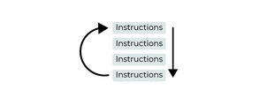
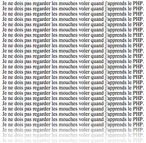
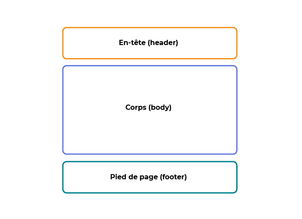
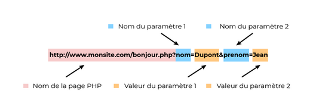
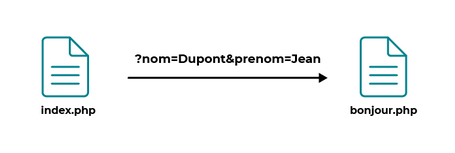
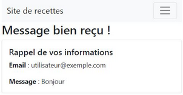
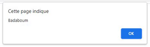
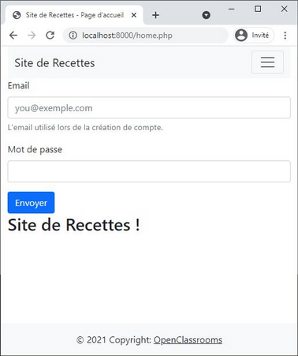

Envie d'apprendre le langage PHP, pas de soucis :D :
Introduction au langage PHP
Différence entre site web statique et dynamique
Un site statique :
- Se réalise uniquement à l'aide des langages HTML et CSS
- Ne permet pas de mettre à jour son contenu automatiquement, il faut que les webmaster modifie le code source pour y ajouter des nouveautés, pas pratique quand on doit mettre à jour son site plusieurs fois dans la même journée, surtout si on veut créer un site autonome pour l'utilisateur
- Est donc adapté pour un site "vitrine" (pour présenter son entreprise par exemple) mais sans aller plus loin
- Est de plus en plus rare aujourd'hui, car dès que l'on rajoute un élément d'interaction comme un formulaire de contact, on ne parle plus de site statique mais de site dynamique
Un site dynamique :
- Utilise d'autre langage en plus du HTML et CSS, etls que PHP et MySQL
- Peut changer sans l'intervention du webmaster
- Permet aux visiteurs de participer à la vie du site, de poster des messages, etc.. de rendre le site vivant
Fonctionnement d'un site web
Lorsqu'on veut visiter un site web, on tape son adresse dans le navigateur web Internet est un réseau composé d'ordinateurs qui peuvent être classés en deux catégories :
- Les clients : Ordinateurs des internautes, chaque client représente un visiteur d'un site web
- Les serveurs : Ordinateurs puissants qui stockent et délivrent des sites web aux internautes, c'est-à-dire aux clients
On voit la différence entre un site statique et un site dynamique dans la communication entre le client et le serveur.
Pour un site statique :
- Le client demande au serveur à voir une page web ("coucou, je voudrais voir cette page web")
- Le serveur lui répond en lui envoyant la page réclamée ("coucou, voici la page demandée")
Pour un site dynamique :
- Le client demande au serveur à voir une page web ("coucou, je voudrais voir cette page web")
- Le serveur prépare la page spécialement pour le client (il la génère)
- Le serveur lui répond en lui envoyant la page réclamée ("coucou, voici la page demandée, celle qui t'es appropiée")
La page web est générée à chaque fois qu'un client la réclame, c'est précisément ce qui rend les sites dynamiques "vivants" car le contenu d'une même page peut changer d'un instant à l'autre.
C'est comme cela que certains sites parviennent à afficher par exemple un pseudo sur toutes les pages, étant donné que le serveur génère une page à chaque fois qu'on lui en demande une, il peut la personnaliser en fonction des goûts et des préférences du visiteur.
Les langages du web
- HTML : Permet d’écrire le contenu des pages web et de le structurer
- CSS : Langage de mise en forme et de la mise en page du site web, il permet de choisir la couleur, la taille des menus, etc..
- PHP : Un langage que les serveurs comprennent, il génère la page web comme on l’a vu sur un des schémas précédents, il peut fonctionner seul mais combiné avec MySQL il devient encore plus intéressant
- MySQL : C'est Un SGBD (Système de Gestion de Base de Données), son rôle est d’enregistrer des données de manière organisée afin de nous aider à les retrouver plus facilement, c’est grâce à lui qu’on peut enregistrer la liste des membres du site web, les messages postés sur le forum, etc..
Avec ces deux langages on fait un site statique, mais pour un site dynamique on rajoute PHP et MySQL :
PHP et MySQL sont disponibles gratuitement sous licence Open Source.
PHP est donc un langage de programmation utilisé sur de nombreux serveurs pour prendre des décisions; C'est PHP qui décide du code HTML qui sera généré et envoyé au client à chaque fois.
Voici un exemple de ce que l'on peut écrire en PHP :
"Si le visiteur est membre de mon site et qu'elle s'appelle Clémentine, affiche Bienvenue ma Lutine sur la page web.
En revanche, si ce n'est pas un membre de mon site, affiche Bienvenue à la place, et propose au visiteur de s’inscrire."
Donc en bref, si c'est un membre enregistré ou non, il ne verra pas les mêmes choses, et n'aura peut-être pas accès au même contenu.
Préparation de l'environnement de travail pour ce cours
Pour ce cours, on va temporairement transformer l' ordinateur en serveur pour pouvoir exécuter du PHP et travailler sur le site dynamique; On va avoir besion de :
- Apache : Un des programmes les plus important, chargé de délivrer les pages web aux visiteurs, toutefois il ne gère que les sites statiques (ne peut traiter que des pages en HTML), il est donc nécessaire de rajouter PHP et MySQL pour les sites dynamiques.
- PHP : Plug-in pour Apache qui le rend capable de traiter des pages web dynamiques en PHP
- MySQL : Programme de gestion de base de données, il permet d’enregistrer des données de manière organisée
On peut les installer un à un mais cela prend plus de temps que d’installer un pack tout prêt qui les contient déjà, la seule différence est que les installer un par un permet d'être administrateur du serveur en plus.
Sur Linux on installera donc XAMPP (anciennement LAMPP), puis :
- Aller dans le dossier de téléchargement (exemple le bureau) : cd /Desktop
- Passer en root pour installer et lancer XAMPP : sudo su
- chmod 755 xampp-linux-*-installer.run (penser à remplacer l'étoile dans la commande par le numéro de version du fichier téléchargé)
- ./xampp-linux-*-installer.run
- Pour démarrer XAMPP : /opt/lampp/lampp start
- Pour arrêter XAMPP : /opt/lampp/lampp stop
- Tester XAMPP en ouvrant le navigateur et en tapant l'adresse suivante : http://localhost
- Les fichiers PHP devront être placés dans le répertoire /opt/lampp/htdocs, on peut y créer un sous-répertoire test pour nos premiers tests : cd /opt/lampp/htdocs && mkdir test
- Une fois le dossier créé, on peut y accéder depuis le navigateur à l'adresse : http://localhost/test
PHP fournit un serveur web interne très pratique, et qui utilise PHP en ligne de commande pour provoquer l'exécution du script et le rendu de la page.
Par exemple, si l'on crée un fichier PHP index.php avec le contenu suivant :
<?php echo "Coucou par ici";
Et qu'au niveau du dossier où se trouve le fichier index.php, on exécute en ligne de commande :
php -S localhost:8080
localhost étant le "nom de domaine" local, "8080" étant un port HTTP quelconque;
Alors en accédant à http://localhost:8080/index.php, le retour de l'exécution de ce script PHP sera disponible !
Utilisation des balises PHP
Pour utiliser du PHP, on va devoir introduire une nouvelle balise et celle-ci est un peu spéciale, elle commence par <?php et se termine par ?>, c'est donc à l'intérieur que l'on mettra du code PHP :
<?php /* Le code PHP se met ici */ ?>
On peut sans problème écrire la balise PHP sur plusieurs lignes, ce qui sera souvent le cas car le code PHP fera souvent plusieurs lignes, exemple :
<?php /* Le code PHP se met ici Et ici Et encore ici */ ?>
Il existe d'autres balises pour utiliser du PHP :
- <? ?>
- <% %>
- <?= ?>
Toutefois la forme la plus correcte est bien <?php ?>.
Le code source d'une page HTML est constitué de balises (aussi appelées tags, en anglais), par exemple,<ul>.
Le code PHP va venir s'insérer dans le code HTML, on va en effet placer dans nos pages web des morceaux de code PHP à l'intérieur du HTML, ces bouts de code PHP seront les parties dynamiques de la page, c'est-à-dire les parties qui peuvent changer toutes seules..
On peut mettre du PHP à divers endroits dans le code HTML :
- Au milieu du code HTML :
<!DOCTYPE html> <html> <head> <title>Ceci est une page de test avec des balises PHP</title> <meta charset="utf-8" /> </head> <body> <h2>Page de test</h2> <p> Cette page contient du code HTML avec des balises PHP.<br /> <?php /* Insérer du code PHP ici */ ?> Voici quelques petits tests : </p> <ul> <li style="color: blue;">Texte en bleu</li> <li style="color: red;">Texte en rouge</li> <li style="color: green;">Texte en vert</li> </ul> <?php /* Encore du PHP Toujours du PHP */ ?> </body> </html>
- Dans l'en-tête de la page :
<!DOCTYPE html> <html> <head> <title>Ceci est une page de test <?php /* Code PHP */ ?></title> <meta charset="utf-8" /> </head>
- Au milieu d'une balise HTML :
<!DOCTYPE html> <html> <head> <title>Ceci est une page de test</title> < meta <?php /* Code PHP */ ?> charset="utf-8" /> </head>
Les instructions
Le PHP est un langage de programmation, ce qui n'était pas le cas du HTML.
Tout langage de programmation contient ce qu'on appelle des instructions, dont voici les caractéristiques :
- On en écrit une par ligne en général
- En PHP elles se terminent toutes par un point-virgule, ce qui signifie "fin de l'instruction"
- Une instruction commande à l'ordinateur d'effectuer une action précise.
- Démarer XAMPP
- Aller à l’adresse http://localhost/test ou http://localhost:8888/test
- - Une page web s'ouvre, indiquant tous les fichiers qui se trouvent dans le dossier test, on devrait avoir le fichier affichertexte.php.
- Cliquer dessus : L'ordinateur génère alors le code PHP puis ouvre la page, on obtient donc le résultat.
Le même résultat peut être obtenu dans le navigateur, en allant directement à l'adresse suivante : http://localhost/test/affichertexte.php. - Les commentaires monolignes : Commentaire sur une seule ligne, pour cela on doit taper deux slashs "//", et ensuite mettre le commentaire, exemple :
<?php echo "J'habite en Chine."; // Cette ligne indique où j'habite // La ligne suivante indique mon âge echo "J'ai 92 ans."; ?>
Le premier commentaire est à la fin d’une ligne, le second est sur toute une ligne.
On commente comme on veut, mais pour commenter une ligne précise alors mieux vaut mettre le commentaire à la fin de cette ligne - Les commentaires multilignes : Ce sont les plus pratiques si on pense écrire un commentaire sur plusieurs lignes, mais on peut aussi s'en servir pour écrire des commentaires d'une seule ligne, il faut commencer par écrire /* puis refermer par */, exemple :
<?php /* La ligne suivante indique que je suis un lutin Si tu ne me crois pas... ... tu as tort */ echo "Mon signe Maya est Graine jaune Galactique."; ?>
- error_reporting = E_ALL (si la ligne existe déjà et qu'elle n'a pas cette valeur)
- display_errors = On (si la ligne existe déjà et qu'elle n'a pas cette valeur)
- Son nom : Pour pouvoir la reconnaître, on lui donne un nom, par exemple : age
- Sa valeur : C'est l'information qu'elle contient, et qui peut changer, par exemple : 17
- Les chaînes de caractères (string) : Stocke du texte
- Les nombres entiers (int pour integer) : Les nombres du type 1, 2, 3, 4, etc. On compte aussi parmi eux les entiers relatifs : -1, -2, -3, ..
- Les nombres décimaux (float) : Comme 14,738, attention, les nombres doivent être écrits avec un point au lieu de la virgule (c'est la notation anglaise)
- Les booléens (bool) : Permet de stocker soit vrai soit faux
- Rien (NULL) : Aussi bizarre que cela puisse paraître, on a parfois besoin de dire qu'une variable ne contient rien, ce n'est pas vraiment un type de données, mais plutôt l'absence de type
- son nom est userAge
- sa valeur est 17
- D'abord, on écrit le symbole "dollar" ($) : Il précède toujours le nom d'une variable, c'est comme un signe de reconnaissance, ça permet de dire à PHP "J'utilise une variable"
- Ensuite, il y a le signe "égal" (=) : C'est pour dire que $userAge est égal à ce qui suit
- À la suite, il y a la valeur de la variable, ici 17
- On finit par le point-virgule (;) qui permet de terminer l'instruction
- String (chaîne de caractère) : Permet de stocker du texte, on l’entoure de guillemets doubles "" ou simples (apostrophes) '', exemple :
<?php $fullname = "Antoine Giraud"; $email = 'psykadelicdream@free.fr'; ?>
Attention, si on veut insérer un guillemet simple alors que le texte est entouré de guillemets simples, il faut l'échapper en insérant un antislash devant, il en va de même pour les guillemets doubles, exexemple :
<?php $variable = "Mon \"nom\" est Antoine"; $variable = 'Je m\'appelle Antoine'; ?>
En effet, si on oublie de mettre un antislash, PHP va croire que c'est la fin de la chaîne et il ne comprendra pas le texte qui suivra (et on aura un message Parse error).
On pourra en revanche insérer sans problème des guillemets simples au milieu de guillemets doubles, et inversement :<?php $variable = 'Mon "nom" est Antoine'; $variable = "Je m'appelle Antoine"; ?>
- int (nombre entier) : Il suffit tout simplement d'écrire le nombre, sans guillemets, exemple :
<?php $userAge = 17; ?>
- float (nombre décimale) : On doit écrire le nombre avec un point au lieu d'une virgule, c'est la notation anglaise, exemple :
<?php $price = 57.3; ?>
-
bool (booléen) : Pour dire si une variable vaut vrai ou faux, on doit écrire le mot true ou false sans guillemets autour (ce n’est pas une chaîne de caractères), exemple :
<?php $isAuthor = true; $isAdministrator = false; ?>
-
NULL (variable vide) : Sert simplement à indiquer que la variable ne contient rien.
Si on veut créer une variable qui ne contient rien, on doit lui passer le mot-clé NULL (qu’on peut aussi écrire en minuscules : null), exemple :<?php $noValue = NULL; ?>
- Avec des guillemets doubles : C'est le plus simple (mais le moins recommandé), on peut écrire le nom de la variable au milieu du texte et il sera remplacé par sa valeur, exemple :
<?php $fullname = "Clémentine Degaine"; echo "Bonjour $fullname et bienvenue sur le site !"; ?>
Ce qui affiche : Bonjour Clémentine Degaine et bienvenue sur le site !
En effet lorsqu’on utilise des guillemets doubles, les variables qui se trouvent à l’intérieur sont remplacées par leur vraie valeur. - Avec des guillemets simples : Moins simple mais recommandée, exemple :
<?php $fullname = 'Clémentine Degaine'; echo 'Bonjour ' . $fullname . ' et bienvenue sur le site !'; // OK ?>
Ici on écrit la variable en dehors des guillemets et on sépare les éléments les uns des autres à l’aide d’un point.
Ça a l'air bien plus compliqué, mais en fait c'est cette méthode qu'utilisent la plupart des programmeurs expérimentés en PHP, le code est plus lisible, et on repère bien la variable, alors qu’avec des guillemets doubles elle est “noyée” dans le texte, en plus l’éditeur de texte devrait nous colorer la variable, ce qu'il ne fait pas quand on utilise les guillemets doubles.
En plus, cette méthode d’écriture est un peu plus rapide car le PHP voit tout de suite où se trouve la variable et n’a pas besoin de la chercher au milieu du texte. - Pour introduire une condition, on utilise le mot if qui signifie «si», en anglais
- On ajoute à la suite, entre parenthèses, la condition en elle-même
- Enfin, on ouvre des accolades à l'intérieur desquelles on placera les instructions à exécuter si la condition est remplie
- Soit la condition est remplie et alors on affiche quelque chose
- Sinon, on saute les instructions entre accolades, on ne fait rien
- Si $isAllowedToEnter est égale à "Oui", tu exécutes ces instructions
- Sinon, si $isAllowedToEnter est égale à "Non", tu exécutes ces autres instructions
- Sinon, tu redemandes l'âge pour savoir si on a ou non l'autorisation d'entrer
- soit true (vrai)
- soit false (faux)
- Il n'y a pas d'accolade
- On ajoute : après la parenthèse fermante de l'instruction if.
- Et il faut ajouter une instruction endif;
- Il y a beaucoup moins d'accolades : elles marquent seulement le début et la fin du switch
- On indique au début du switch sur quelle variable on travaille, ici $grade
En bref on dit à PHP : "Analyse la valeur de $grade" - On utilise des case pour analyser chaque cas : case 0 ,case 10 , etc
- On n'a plus besoin de mettre le double égal
Par contre le switch ne peut tester que l'égalité, on ne peut pas l’utiliser avec les symboles < > <= >= != - Le mot-clé default à la fin est un peu l'équivalent du else
C'est le message qui s'affiche par défaut, quelle que soit la valeur de la variable - case 0 ? Non. Je saute
- case 5 ? Non plus. Je saute
- case 7 ? Non plus. Je saute
- case 10 ? Oui, j'exécute les instructions
- case 12
- case 16
- etc
- Pour une condition simple et courte, on utilise le if
- Et quand on a une série de conditions à analyser, on préfère utiliser switch pour rendre le code plus clair
- Tester la valeur d'une variable dans une condition
- Affecter une valeur à une variable selon que la condition est vraie ou non
- des utilisateurs
- des recettes
- et peut-être des commentaires
- Un tableau se déclare entre crochets : [ ];
- Il possède des indices : 0, 1, 2, …
- On peut accéder à un élément du tableau à partir de ces clés.
- Les instructions sont d'abord exécutées dans l'ordre, de haut en bas
- À la fin des instructions, on retourne à la première
- On recommence à lire les instructions dans l'ordre
- Et on retourne à la première, etc..
- Tant que la condition est remplie, les instructions sont réexécutées
- Dès que la condition n'est plus remplie, on sort enfin de la boucle
- echo permet d'afficher du texte en PHP, à noter qu'il y a une balise HTML <br/> à la fin qui permet d'aller à la ligne
- $lines++; est une façon plus courte d'ajouter 1 à la variable; On appelle cela l'incrémentation (ce nom tout simplement que l'on a ajouté 1 à la variable).
- Le premier sert à l'initialisation, c'est la valeur que l'on donne au départ à la variable (ici, elle vaut 0)
- Le second, c'est la condition, comme pour le while : Tant que la condition est remplie, la boucle est réexécutée; Dès que la condition ne l'est plus, on en sort
- Enfin, le troisième c'est l'incrémentation, cela permet d'ajouter 1 à la variable à chaque tour de boucle
- le for fait la même chose que le while
- ..mais il rassemble sur une seule ligne tout ce qu'il faut savoir sur le fonctionnement de la boucle
- while est plus simple et plus flexible : On peut faire tous les types de boucles avec, mais on peut oublier de faire certaines étapes, comme l'incrémentation de la variable.
- for est bien adapté quand on doit compter le nombre de fois que l'on répète les instructions, et il permet de ne pas oublier de faire l'incrémentation pour augmenter la valeur de la variable.
- Les tableaux numérotés
- Les tableaux associatifs
- Le premier élément (Tarte au citron) aura le n° 0
- Ensuite Samoussas le n° 1
- Etc..
- Les tableaux numérotés permettent de stocker une série d'éléments du même type, comme des prénoms, chaque élément du tableau contiendra alors un prénom
- Les tableaux associatifs permettent de découper une donnée en plusieurs sous-éléments, par exemple, une adresse peut être découpée en nom, prénom, nom de rue, ville ..
- La boucle for
- La boucle foreach
- La fonction print_r (utilisée principalement pour le déboggage)
- Le titre de la recette
- Les étapes de la recette
- L'auteur
- Et la réponse à "enabled"
- D'abord le nom du tableau, ici $recipe
- Ensuite le mot-clé as (qui signifie "en tant que"»")
- Enfin, le nom d'une variable que l'on choisit, et qui va contenir tour à tour chacune des valeurs du tableau, ici $value
- $property qui contiendra la clé de l'élément en cours d'analyse ("title", "author", etc..)
- $propertyValue qui contiendra la valeur de l'élément en cours d'analyse ("Tarte au citron", "clementine.degaine@gmail.com", etc..)
- array_key_exists pour vérifier si une clé existe dans le tableau
- in_array pour vérifier si une valeur existe dans le tableau
- array_search pour récupérer la clé d'une valeur dans le tableau
- Le nom de la clé à rechercher
- Puis le nom du tableau dans lequel on fait la recherche
- true (vrai) si la clé est dans le tableau
- false (faux) si la clé ne s'y trouve pas
- Si elle a trouvé la valeur, array_search renvoie la clé correspondante (dans le cas d'un tableau numéroté, la clé sera un numéro, dans le cas d'un tableau associatif, la clé sera un nom)
- Si elle n'a pas trouvé la valeur, array_search renvoie false
- On donne en entrée à la fonction un paramètre sur lequel elle va faire des calculs (ici, une recette sous forme d'un tableau)
- Et la fonction nous retourne en sortie le résultat : true
- La clé is_enabled est true
- L'utilisateur doit être connecté
- L'utilisateur doit avoir un rôle administrateur
- L'utilisateur doit être majeur
- Etc..
- Celles qui ne retournent aucune valeur (mais elles effectuent quand même des actions)
- Celles qui retournent une valeur
- La fonction allowRecipe est appelée avec un tableau en paramètre
- Le résultat renvoyé par la fonction (lorsqu'elle a terminé) est stocké dans la variable $isAllowed
- str_replace pour rechercher et remplacer des mots dans une variable
- move_uploaded_file pour envoyer un fichier sur un serveur
- imagecreate pour créer des images miniatures (aussi appelées "thumbnails")
- mail pour envoyer un mail avec PHP (très pratique pour faire une newsletter)
- de nombreuses options pour modifier des images, y écrire du texte, tracer des lignes, des rectangles, etc..
- crypt pour chiffrer des mots de passe
- date pour renvoyer l'heure, la date, etc..
- strlen pour calculer la longueur d'une chaîne de caractères
Exemple :<?php $recipe = 'Etape 1 : des fleurs ! Etape 2 : de la mâche'; $length = strlen($recipe); echo 'La phrase ci-dessous comporte ' . $length . ' caractères :' . PHP_EOL . $recipe;
$ php exemple.php La phrase ci-dessous comporte 44 caractères : Etape 1 : des fleurs ! Etape 2 : de la mâche
Dans le même ordre d'idée, la fonction count permet aussi de compter le nombre d'éléments dans un tableau, car en PHP une chaîne de caractères, c'est un tableau de caractères !
- str_replace pour rechercher et remplacer une chaîne de caractères
Exemple :<?php echo str_replace('c', 'C', 'la tarte au citron, c\'est très bon');
$ php exemple.php la tarte au Citron, C’est très bon
On a besoin d'indiquer trois paramètres :
- La chaîne qu'on recherche, ici les "c" (on aurait très bien pu rechercher un mot aussi)
- La chaîne qu'on veut mettre à la place, ici on met des "C" à la place des “c”
- La chaîne dans laquelle on doit faire la recherche
- sprintf pour formater une chaîne de caractères
Elle est très pratique lorsque nous avons besoin de passer plusieurs variables et elle peut remplacer la concaténation pour des raisons de lisibilité du code, exemple :<?php $recipe = [ 'title' => 'Salade de fleurs', 'recipe' => 'Etape 1 : Laver la salade ; Etape 2 : euh ...', 'author' => 'psykadelicdream@free.fr', ]; echo sprintf( '%s par "%s" : %s', $recipe['title'], $recipe['author'], $recipe['recipe'] );
$ php exemple.php Salade de fleurs par "psykadelicdream@free.fr" : Etape 1 : Laver la salade ; Etape 2 : euh ...
- date permet de récupérer la date, elle renvoie l’heure, les minutes et d’autres informations, voici les principaux paramètres :
Attention il faut bien respecter les minuscules et majuscules selon ce que l’on souhaite récupérer, c’est important.Paramètre Description H Heure i Minute d Jour m Mois Y Année
Si on veut afficher l’année, il faut envoyer le paramètre Y à la fonction :<?php $year = date('Y'); echo $annee;
Autre exemple, avec la date complète et l’heure :<?php // Enregistrons les informations de date dans des variables $day = date('d'); $month = date('m'); $year = date('Y'); $hour = date('H'); $minut = date('i'); // Maintenant on peut afficher ce qu'on a recueilli echo 'Bonjour ! Nous sommes le ' . $day . '/' . $month . '/' . $year . 'et il est ' . $hour. ' h ' . $minut; ?>
Un code à retenir pour marquer par exemple l’heure et la date sur un site, ou afficher l’heure et la date d’ajout d’un post d’un utilisateur sur un forum par exemple. - Vérifier si la recette est valide
- Récupérer des recettes à afficher
- Récupérer le nom d'un utilisateur en fonction de l'e-mail associé à la création d'une recette
- true si la recette est valide
- faux si la recette ne l'est pas
- On tape function (en français, ça veut dire “fonction”)
- Ensuite, on lui donne un nom, par exemple, celle-ci s'appelle isValidRecipe
- Boucler sur les recettes valides
- Prendre l'e-mail
- Boucler sur les utilisateurs de la plateforme
- Si les e-mails correspondent, prendre le nom
- Sinon, continuer à parcourir la liste des utilisateurs
- Parse error : Si on formule mal une instruction
- Undefined function : Si on utilise une fonction non reconnue
- Wrong parameter count : Si on entre un nombre inccorect de paramètres pour une fonction
- Oublier le point-virgule à la fin de l'instruction, exemple :
$id_news = 5
Correction :
$id_news = 5;
- Oublier de fermer un guillemet (une apostrophe ou une parenthèse), exemple :
echo "Bonjour !;
Correction :
echo "Bonjour !";
-
Se tromper dans la concaténation et oublier un point, exemple :
echo "J'ai " . $age " ans";
Correction :
echo "J'ai " . $age . " ans";
- Mal fermer une accolade, cela peut être le cas pour une structure en if, par exemple.
Si on oublie d'en fermer une, il est probable que la parse error nous indique que l'erreur se trouve à la dernière ligne du fichier (c'est-à-dire à la ligne 115 si le fichier comporte 115 lignes).
Donc, si on nous indique une erreur à la dernière ligne, il va probablement falloir relire tout le fichier PHP à la recherche d'une accolade mal fermée ! - Soit la fonction n'existe vraiment pas, on a probablement fait une faute de frappe.
Correction : Vérifier si une fonction à l'orthographe similaire existe.
- Soit la fonction existe vraiment, mais PHP ne la reconnaît pas, c'est parce que cette fonction se trouve dans une extension de PHP que l’on a pas activée.
Par exemple, si on essaie d'utiliser la fonction imagepng alors que l’on a pas activé la bibliothèque nécessaire pour les images en PHP, on nous dira que la fonction n'existe pas.
Correction : Activer la bibliothèque qui utilise la fonction, et tout sera réglé.
- Il se peut aussi que l’on essaie d'utiliser une fonction qui n'est pas disponible dans la version de PHP que l’on a.
Correction : Dans ce cas vérifier dans le manuel dans quelles versions de PHP cette fonction est disponible. - On a oublié des paramètres pour la fonction
- On alors on en a trop mis
- Le premier pour le nom du fichier à ouvrir
- Et le second pour le mode d'ouverture (en lecture seule, écriture, etc.)
- Headers already sent by.. : Si on écrit du code au mauvais endroit
- L'image contient des erreurs : Si on a fait une erreur d'utilisation de la librairie GD
- Maximum execution time exceeded : Si on fait une boucle infinie
- Supprmer la ligne suivante dans le code :
<?php header ("Content-type: image/png"); ?>
L'erreur apparaîtra à la place du message L'image contient des erreurs.
- Afficher le code source de l’image (comme si on allait regarder la source HTML de la page, sauf que là, il s’agit d’une image).
- Retourner une chaîne de caractères même si le mail n'est pas trouvé ("utilisateur inconnu")
- Vérifier la liste des e-mails utilisateur et recette : Si ça se trouve, il y a une coquille dans l'un des e-mails..
- Une page "recettes"
- Une page d'édition et de création de recette
- Une page avec un formulaire de contact
- L'en-tête
- Le menu
- Le pied de page
- Reprendre les pages de son site, par exemple index.php
- Remplacer le menu par le code PHP suivant :
<?php include('header.php'); ?>
Cette instruction ordonne à l'ordinateur :
“Insère ici le contenu de la page header.php“. - nom : Dupont
- prenom : Jean
- Récupérer ces informations
- Les traiter
- Les afficher
- Si elles existent, on affiche la confirmation de prise en compte du message.
- S'il nous manque une des variables (ou les deux), on affiche un message d'erreur : "Il faut un e-mail et un message pour soumettre le formulaire", et on arrête l'exécution de la page.
- Contrôler si l’email passé est bien valide, à l’aide de la fonction filter_var
- Vérifier que le message n’est pas vide, à l’aide de la fonction empty
- Vérifier que tous les paramètres que l’on attend soient là
- Vérifier qu’ils contiennent des valeurs correctes
- method : Qui est la méthode d’envoi du formulaire
- action : Qui sert à définir la page appelée par le formulaire, cette page recevra les données du formulaire et sera chargée de les traiter
- get : Les données transiteront par l'URL, comme on l'a appris précédemment.
On pourra les récupérer grâce au tableau $_GET.
Cette méthode est assez peu utilisée car on ne peut pas envoyer beaucoup d'informations dans l'URL. - post : Les données ne transiteront pas par l'URL, l'utilisateur ne les verra donc pas passer dans la barre d'adresse.
Cette méthode permet d'envoyer autant de données que l'on veut, ce qui fait qu'on la privilégie le plus souvent, néanmoins, les données ne sont pas plus sécurisées qu'avec la méthode GET , et il faudra toujours vérifier si tous les paramètres sont bien présents et valides (cf chapitre précédent), en effet on ne doit pas plus faire confiance aux formulaires qu’aux URL.
La bonne pratique consiste généralement à privilégier la méthode post pour les formulaires. - Si la méthode est GET : Ce sera la supervariable $_GET
- Si la méthode est POST(à privilégier) ce sera la supervariable $_POST qui recevra les données.
- Le visiteur arrive sur le formulaire et le remplit (en indiquant le fichier à envoyer)
Ici une simple page HTML suffit pour créer le formulaire. - PHP réceptionne les données du formulaire et, s'il y a des fichiers dedans, il les enregistre dans un des dossiers du serveur
- Vérifier tout d'abord si le visiteur a bien envoyé un fichier, en testant la variable $_FILES['image_envoyee'] avec isset() et s'il n'y a pas eu d'erreur d'envoi, grâce à $_FILES['image_envoyee']['error'].
- Vérifier si la taille du fichier ne dépasse pas 1 Mo par exemple (environ 1 000 000 d'octets), grâce à $_FILES['image_envoyee']['size'].
- Vérifier si l'extension du fichier est autorisée (il faut interdire à tout prix que les gens puissent envoyer des fichiers PHP, sinon ils pourraient exécuter des scripts sur notre serveur).
Dans notre cas, nous autoriserons seulement les images (fichiers .png, .jpg, .jpeg et .gif).
Nous analyserons pour cela la variable $_FILES['image_envoyee']['name']. - Le nom temporaire du fichier (on l'a avec $_FILES['image_envoyee']['tmp_name'])
- Le chemin qui est le nom sous lequel sera stocké le fichier de façon définitive.
On peut utiliser le nom d'origine du fichier $_FILES['image_envoyee']['name'] ou générer un nom au hasard. - D’affichier du texte
- D’utiliser des variables
- De transmettre des variables via une zone de texte d’un formulaire
- D’utiliser des conditions simples if et else
- D’utiliser des inclusions de fichiers avec include ou include_once
- Une clé 'password' avec un mot de passe
- Et une clé 'email' avec leur e-mail
- Qu'est-ce que je veux arriver à faire ?
- Quel schéma de code utiliser, c’est à dire qu’on va commencer à le découper en plusieurs morceaux, eux-mêmes découpés en petits morceaux (c'est plus facile à avaler).
- Les fonctions et connaissances en PHP dont on va avoir besoin (pour être sûr qu’on les utilise convenablement).
- L’utilisateur n’est pas connecté : Auquel cas le formulaire de contact s’affiche et la liste de recettes ne s’affiche pas.
- L’utilisateur a soumis le formulaire avec le bon mot de passe pour ce dernier : Le message de succès s’affiche, le formulaire de connexion ne s’affiche pas et les recettes ne s’affichent.
- L’utilisateur a soumis le formulaire avec le mauvais mot de passe pour ce dernier : Le message d’erreur s’affiche, le formulaire de connexion s’affiche et les recettes ne s’affichent pas.
- login.php : Contient un simple formulaire.
- home.php : Doit maintenant inclure un formulaire de connexion et une condition sur l’affichage des recettes.
- Les sessions
- Les cookies
- Un visiteur arrive sur le site
- On demande à créer une session pour lui
- PHP génère alors un numéro unique
Ce numéro est souvent très grand, exemple : a02bbffc6198e6e0cc2715047bc3766f.
Ce numéro sert d'identifiant, c'est ce qu'on appelle un ID de session ou PHPSESSID. - Une variable qui contient le nom du visiteur : $_SESSION['nom']
- Une autre qui contient son prénom : $_SESSION['prenom']
- Etc..
- Soit le visiteur clique sur un bouton "Déconnexion" (que l’on a créé) avant de s'en aller
- Soit on attend quelques minutes d'inactivité pour le déconnecter automatiquement : On parle alors de timeout
- session_start() : Démarre le système de sessions, si le visiteur vient d'arriver sur le site, alors un numéro de session est généré pour lui
- session_destroy() : Ferme la session du visiteur, cette fonction est automatiquement appelée lorsque le visiteur ne charge plus de page du site pendant plusieurs minutes (c'est le timeout), mais on peut aussi créer une page "Déconnexion" si le visiteur souhaite se déconnecter manuellement.
- Un script qui demande un identifiant et un mot de passe pour qu'un visiteur puisse se "connecter" (s'authentifier).
On peut enregistrer ces informations dans des variables de session et se souvenir de l'identifiant du visiteur sur toutes les pages du site. - Puisqu'on retient son identifiant et que la variable de session n'est créée que s'il a réussi à s'authentifier, on peut l'utiliser pour restreindre certaines pages de notre site à certains visiteurs uniquement.
Cela permet de créer toute une zone d'administration sécurisée : Si la variable de session login existe, on affiche le contenu, sinon on affiche une erreur.
Cela rappel l'exercice sur la protection d'une page par mot de passe, sauf qu'ici, on peut se servir des sessions pour protéger automatiquement plusieurs pages. - On se sert activement des sessions sur les sites de vente en ligne car cela permet de gérer un panier : On retient les produits que commande le client quelle que soit la page où il est.
Lorsqu'il valide sa commande, on récupère ces informations et on le fait payer. - Aller dans le menu Paramètres>Vie privée et sécurité>Cookies et données de sites
- Cliquer sur "Gérer les données"
- Le nom du cookie (exemple : LOGGED_USER)
- La valeur du cookie (exemple : utilisateur@exemple.com )
- La date d'expiration du cookie, sous forme de "timestamp" (exemple : 1090521508 )
Le timestamp c’est le nombre de secondes écoulées depuis le 1er janvier 1970.
Le timestamp est une valeur qui augmente de 1 toutes les secondes.
Pour obtenir le timestamp actuel, on fait appel à la fonction time().
Pour définir une date d'expiration du cookie, il faut ajouter au "moment actuel" le nombre de secondes au bout duquel il doit expirer.
Donc si on veut supprimer le cookie dans un an précisément, il faudra écrire : time() + 365*24*3600 - Les variables superglobales sont des variables automatiquement créées par PHP, elles se présentent sous la forme de tableaux (arrays) contenant différents types d'informations
- Dans les chapitres précédents, nous avons découvert deux superglobales essentielles : $_GET (qui contient les données issues de l'URL) et $_POST (qui contient les données issues d'un formulaire)
- La superglobale $_SESSION permet de stocker des informations qui seront automatiquement transmises de page en page pendant toute la durée de visite d'un internaute sur notre site.
Il faut au préalable activer les sessions en appelant la fonction session_start() - La superglobale $_COOKIE représente le contenu de tous les cookies stockés par notre site sur l'ordinateur du visiteur
Les cookies sont de petits fichiers que l'on peut écrire sur la machine du visiteur pour retenir par exemple son nom; On crée un cookie avec la fonction setcookie()
Afficher un texte avec l'instruction echo
L'instruction echo va permettre d'insérer du texte dans la page web, exemple :
<?php echo "Ceci est du texte"; ?> <!-- Ou bien, avec des parenthèses --> <?php echo("Ceci est du texte"); ?>
- On écrit à l'intérieur de la balise PHP l'instruction echo suivie du texte à afficher entre guillemets.
- Les guillemets permettent de délimiter le début et la fin du texte, ce qui aide l'ordinateur à se repérer.
- Enfin, l'instruction se termine par un point-virgule ce qui signifie "fin de l'instruction".
Plus rare, mais l'instruction echo peut être entourée de parenthèses ouvrantes et fermantes.
Il existe une instruction identique appelée print, qui fait la même chose, cependant, echo est plus couramment utilisée.
Il faut savoir qu'on a aussi le droit de demander d'afficher des balises, par exemple le code suivant fonctionne :
<?php echo "Ceci est du texte"; ?>
Le mot "texte" sera affiché en gras (ou autre mise en forme, comme ici en violet) grâce à la présence des balises <strong> </strong>.
Comment faire pour afficher un guillemet ?
Si on met un guillemet, ça veut dire pour l'ordinateur que le texte à afficher s'arrête là, donc on risque au mieux de faire planter le code et d'avoir un "Parse error".
La solution consiste à faire précéder le guillemet d'un antislash \, exemple :
<?php echo "Cette ligne a été écrite \"uniquement\" en PHP."; ?>
Donc voici un exemple d'une instruction echo dans une page HTML :
<!DOCTYPE html> <html> <head> <title>Notre première instruction : echo</title> <meta charset="utf-8" /> </head> <body> <h2>Affichage de texte avec PHP</h2> <p> Cette ligne a été écrite entièrement en HTML.<br /> <?php echo("Celle-ci a été écrite entièrement en PHP."); ?> </p> </body> </html>
Enregistrer une page PHP
Enregistrer la page avec l'extension .php (par exemple "affichertexte.php"), dans le dossier test créé prédémment; Il doit donc se trouver dans \opt\lampp\htdocs\test.
Quel que soit le système d'exploitation (et si on utilise XAMPP), l'essentiel est que le fichier soit enregistré dans le dossier (ou un sous dossier de) htdocs, sinon le fichier PHP ne pourra pas s'exécuter.
Tester la page PHP
Voici un nouveau test pour comprendre la puissance du PHP :
<!DOCTYPE html> <html> <head> <meta charset="utf-8" /> <title>Ma page web</title> </head> <body> <h1>Ma page web</h1> <p>Aujourd'hui nous sommes le <?php echo date('d/m/Y h:i:s'); ?>.</p> </body> </html>
La date et l'heure s'affichent automatiquement sur la page web :)
So on regarde le code source de la page générée dans le navigateur, on ne verra pas de code PHP mais l'heure qui a directement été envoyée dans le code HTML après exécution du code PHP par le serveur.
Les commentaires
Tout comme en HTML ou CSS, les commentaires sont importants car ils permettent de se mettre des explications (pratique notamment quand on ne touche pas au fichier PHP pendant quelques semaines et qu’on souhaite savoir à quoi telle ou telle partie du code sert).
Il existe deux types de commentaire :
Les erreurs PHP (mode de débogage)
Configurer PHP pour afficher les erreurs
La configuration de PHP se fait dans un fichier appelé php.ini.
Pour connaître l'ensemble des informations relatives au PHP utilisé par le serveur web, il existe une commande/fonction PHP, phpinfo().
, ce dernier va permettre de localiser le fichier de configuration pour le modifier.
On va donc dans un premier temps créer un fichier php (sous le nom "infophp.php" par exemple) comme suit dans le répertoire /opt/lampp/htdocs/test/ :
<?php phpinfo();
Une fois le php.ini retrouvé, le modifier comme suit puis enregistrer le fichier :
Ensuite enregistrer le fichier, puis redémarrer le serveur PHP (en relançant XAMPP par exemple).
Dans le fichier de configuration, le point-virgule (;) en début de ligne signifie que tout ce qui suit est un commentaire, et est donc ignoré, si l'une de ces lignes (ou les deux) sont commentées alors il suffit de retirer le point-virgule en début de ligne, dans tous les cas il ne faut pas rajouter une ligne si elle existe déjà.
Tester l'affichage des erreurs
Afin de faire un test pour voir si les erreurs s'affichent bien dans le navigateur, on va créer une erreur dans le script PHP, et ouai on est comme ça :D
Dans le script précédent créé pour afficher les informations relatives à PHP pour le serveur web, on va enlever une parenthèse, puis enregistrer le fichier, ce qui donnera :
<?php phpinfo(;
Maintenant, en réaffichant la page dans le navigateur web, on verra :
Parse error: syntax error, unexpected, ‘;’ in /opt/lampp/lampp/htdocs/info.php on line 1.
Si c'est le cas, c'est que PHP est configuré pour afficher le détail des erreurs, cela fera gagner beaucoup de temps pour comprendre les problème par la suite.
Les variables
Rien qu'avec leur nom, on peut imaginer que c'est quelque chose qui change tout le temps, en effet, le propre d'une variable c'est de pouvoir varier.
Une variable, c'est une petite information stockée en mémoire temporairement.
En PHP, la variable (l'information) existe tant que la page est en cours de génération, dès que la page PHP est générée, toutes les variables sont supprimées de la mémoire car elles ne servent plus à rien, ce n'est donc pas un fichier qui reste stocké sur le disque dur, mais une petite information temporaire présente en mémoire vive.
C'est à nous de créer des variables quand on en a besoin pour retenir des informations.
Une variable est toujours constituée de deux éléments :
Dans cet exemple on a donc une variable appelée age qui a pour valeur 17.
On peut modifier quand on veut la valeur de cette variable, faire des opérations dessus, etc.
Et quand on en a besoin, on l'appelle (par son pti’ nom), et elle nous dit gentiment la valeur qu'elle contient.
Il existe différents types de variables, en effet les variables sont capables de stocker différents types d'informations, on parle de types de données; Voici les principaux types à connaître :
Afficher une variable
Prenons un exemple :
<?php $userAge = 17; ?>
Avec ce code PHP, on vient en fait de créer une variable :
On ne peut pas mettre d'espace dans un nom de variable, on utilise donc une majuscule pour "détacher" visuellement les mots et les rendre plus lisibles, c'est ce que l'on appelle la convention camelCase (cela fait référence aux bosses d'un chameau).
Quand on nomme des variables, il faut éviter également les accents, les cédilles et tout autre symbole, c'est pour cela qu’ici on a écrit age et non âge.
Si on écrit :
<?php $userAge = 17; // La variable est créée et vaut 17 $userAge = 23; // La variable est modifiée et vaut 23 $userAge = 55; // La variable est modifiée et vaut 55 ?>
La variable $userAge va être créée et prendra pour valeur, dans l'ordre : 17, 23, puis 55.
Rien ne s'affiche, seulement, quelque part dans la mémoire de l'ordinateur, une petite zone nommée userAge vient de prendre la valeur 17, puis 23, puis 55.
Les types de données
On les a listées ici, les voici en détail :
Afficher le contenu d’une variable
On a vu qu’on peut afficher du texte avec echo, on peut aussi s’en servir pour afficher la valeur d’une variable !
Pour cela il suffit d’écrire le nom de la variable que l’on veut afficher (sans guillemet car il s’agit d’une variable et non de texte) :
<?php $fullname = 'Clémentine Degaine'; echo $fullname; ?>
Concaténer une variable
On va à présent concaténer (assembler) du texte et une variable.
Certe on pourrait écrire :
<?php $fullname = "Clémentine Degaine"; echo "Bonjour "; echo $fullname; echo " et bienvenue sur le site !"; ?>
Mais on peut le faire sur une ligne, pour cela il y a deux méthodes :
Faire des calculs simples
Les opérations de base
| Symbole | Signification |
| + | Addition |
| - | Soustraction |
| * | Multiplication |
| / | Division |
| % | Modulo |
Voici quelques exemples :
<?php $number = 2 + 4; // $number prend la valeur 6 $number = 5 - 1; // $number prend la valeur 4 $number = 3 * 5; // $number prend la valeur 15 $number = 10 / 2; // $number prend la valeur 5 // Allez on rajoute un peu de difficulté $number = 3 * 5 + 1; // $number prend la valeur 16 $number = (1 + 2) * 2; // $number prend la valeur 6 ?>
Voici des calculs avec plusieurs variables :
<?php $number = 10; $result = ($number + 5) * $number; // $result prend la valeur 150 ?>
Le modulo :
Il est possible de faire un autre type d'opération un peu moins connu : le modulo.
Cela représente le reste de la division entière.
Par exemple, 6 / 3 = 2 et il n'y a pas de reste.
En revanche, 7 / 3 = 2 (car le nombre 3 «rentre» 2 fois dans le nombre 7) et il reste 1 (on a fait ce type de calculs à l'école primaire ;))
Le modulo permet donc de récupérer ce reste :
<?php $number = 10 % 5; // $number prend la valeur 0 car la division tombe juste $number = 10 % 3; // $number prend la valeur 1 car il reste 1 ?>
Une condition peut être écrite en PHP sous différentes formes, on parle de structures conditionnelles.
Les symboles
Voici les symboles qui peuvent être utilisés dans une condition :
| Symbole | Signification |
| == | Est égal à |
| > | Est supérieur à |
| < | Est inférieur à |
| >= | Est supérieur ou égal à |
| <= | Est inférieur ou égal à |
| != | Est différent de |
Il y a deux symboles "égal" (==) sur la première ligne.
Le double égal sert à tester l'égalité, à dire "Si c'est égal à ..", dans les conditions, on utilisera toujours le double égal (==).
La structure if else elseif
Voici ce qu'on doit écrire, dans l'ordre, pour utiliser cette condition :
Exemple :
<?php $isEnabled = true; // La condition d'accès if ($isEnabled == true) { echo "Vous êtes autorisé(e) à accéder au site"; } ?>
Traduit cela donne : Si la variable $isEnabled est vraie, affiche "Vous êtes autorisé(e) à accéder au site".
Ce qui compte ici, c'est qu'il y a deux possibilités :
Si on améliore un peu le script, cela donne :
<?php $isEnabled = true; if ($isEnabled == true) { echo "Vous êtes autorisé(e) à accéder au site"; } else { echo "Accès refusé "; } ?>
Ici on utilise else (sinon) en plus, ce qui permet, au cas où on ne répond pas à la première condition, de faire une deuxième instruction (contrairement au premier exemple où, si on ne répond pas à la première condition, on ne fait pas d’instruction du tout).
Enfin, voici un autre exemple avec l’utilisation en plus de elseif (sinon si) :
<?php $isAllowedToEnter = "Oui"; // SI on a l'autorisation d'entrer if ($isAllowedToEnter == "Oui") { // instructions à exécuter quand on est autorisé à entrer } // SINON SI on n'a pas l'autorisation d'entrer elseif ($isAllowedToEnter == "Non") { // instructions à exécuter quand on n'est pas autorisé à entrer } // SINON (la variable ne contient ni Oui ni Non, on ne peut pas agir) else { echo "Euh, je ne comprends pas ton choix, tu peux me le rappeler s'il te plaît ?"; } ?>
Traduit, cela donne :
Le cas des booléens
Si on regarde bien le dernier code source (avec $isAllowedToEnter), il serait plus adapté d'utiliser des booléens.
Les booléens sont ces variables qui valent :
Voici comment on teste une variable booléenne :
<?php $isAllowedToEnter = true; if ($isAllowedToEnter) { echo "Bienvenue petit nouveau. :o)"; } else { echo "T'as pas le droit d'entrer !"; } ?>
L'un des avantages des booléens, c'est qu'ils sont particulièrement adaptés aux conditions parce qu'on est pas obligé d'ajouter le ==true, PHP comprend qu’il faut qu’il vérifie si $isAllowedToEnter vaut true.
C’est plus rapide à écrire, et cela se comprend mieux.
En effet si on lit la première ligne ça donne : "Si on a l’autorisation d’entrer".
Pour vérifier si la variable vaut false, on utilisera le point d’exclamation !, exemple :
<?php $isAllowedToEnter = true; // Si pas autorisé if (! $isAllowedToEnter) { } ?>
C'est une autre façon de faire, mais si on préfère mettre if($isAllowedToEnter ==false) c'est aussi correct, cependant la méthode "courte" est plus lisible.
Les conditions multiples
Voici de nouveaux mots-clés permettant de poser plusieurs conditions à la fois :
| Mot-clé | Signification | Symbole équivalent |
| AND | Et | && |
| OR | Ou | || |
Exemple :
<?php $isEnabled = true; $isOwner = false; if ($isEnabled && $isOwner) { echo 'Accès à la recette validé'; } else { echo 'Accès à la recette interdit !'; } ?>
Traduit cela donne : Si l'utilisateur est actif et qu'il est l'auteur, il peut accéder à la recette validée, sinon, il verra s'afficher un message de refus.
Autre exemple :
<?php $isEnabled = true; $isOwner = false; $isAdmin = true; if (($isEnabled && $isOwner) || $isAdmin) { echo 'Accès à la recette validé'; } else { echo 'Accès à la recette interdit !'; } ?>
Ici on a rajouté une condition supplémentaire : Soit la condition précédente s'applique, soit l'utilisateur concerné est un administrateur.
Astuce possible
Avec les conditions, il y a une astuce à connaître.
Les deux codes ci-dessous donnent exactement le même résultat :
<?php $chickenRecipesEnabled = true; if ($chickenRecipesEnabled) { echo '<h1>Liste des recettes à base de poulet</h1>'; } ?>
<?php $chickenRecipesEnabled = true; ?> <?php if ($chickenRecipesEnabled): ?> <!-- Ne pas oublier le ":" --> <h1>Liste des recettes à base de poulet</h1> <?php endif; ?><!-- Ni le ";" après le endif -->
Comme on peut le voir, dans le second cas on n'a pas utilisé de echo.
La syntaxe pour utiliser la condition diffère un peu :
Condition Switch
Regardons cet exemple à base de if et de elseif :
<?php $grade = 16; if ($grade == 0) { echo "Tu n’as pas réussi"; } elseif ($grade == 5) { echo "C’est pas très bon"; } elseif ($grade == 7) { echo "C’est en dessous de la moyenne"; } elseif ($grade == 10) { echo "Tu as pile poil la moyenne, c'est un peu juste…"; } elseif ($grade == 12) { echo "Tu es assez bon"; } elseif ($grade == 16) { echo "Tu te débrouilles très bien !"; } elseif ($grade == 20) { echo "Excellent travail, c'est parfait !"; } else { echo "Désolé, je n'ai pas de message à afficher pour cette note"; } ?>
Comme on peut le voir, c'est lourd, long, et répétitif.
Dans ce cas, on peut utiliser une autre structure plus souple : c'est switch !
Voici le même exemple avec switch (le résultat est le même, mais le code est plus adapté) :
<?php $grade = 10; switch ($grade) // on indique sur quelle variable on travaille { case 0: // dans le cas où $grade vaut 0 echo "Tu n’as pas réussi"; break; case 5: // dans le cas où $grade vaut 5 echo "C’est pas très bon"; break; case 7: // dans le cas où $grade vaut 7 echo "C’est en dessous de la moyenne"; break; case 10: // etc. etc. echo "Tu as pile poil la moyenne, c'est un peu juste…"; break; case 12: echo "Tu es assez bon"; break; case 16: echo "Tu te débrouilles très bien !"; break; case 20: echo "Excellent travail, c'est parfait !"; break; default: echo "Désolé, je n'ai pas de message à afficher pour cette note"; } ?>
La différence avec if est que pour switch :
Il y a cependant une chose importante à savoir :
Supposons dans notre exemple que la note soit de 10.
PHP va lire :
Mais contrairement aux elseif, PHP ne s'arrête pas là et continue à lire les instructions des cases qui suivent !
Pour empêcher cela, il faut utiliser l’instruction break !
L'instruction break demande à PHP de sortir du switch, en effet dès que PHP tombe sur break, il sort des accolades et donc il ne lit pas les case qui suivent.
En pratique, on utilise très souvent un break car sinon, PHP lit des instructions qui suivent et qui ne conviennent pas.
Alors, quand doit-on choisir if ou switch ?
C'est surtout un problème de présentation et de clarté :
Condition condensées : Les ternaires
Il existe une autre forme de condition, beaucoup moins fréquente, mais à voir pour info si jamais on tombe dessus, il s'agit de ce qu'on appelle les ternaires.
Un ternaire est une condition condensée qui sert à faire deux choses sur une seule ligne :
Prenons cet exemple à base de if .. else qui met un booléen $majeur à vrai ou faux selon l'âge du visiteur :
<?php $userAge = 24; if ($userAge >= 18) { $isAdult = true; } else { $isAdult = false; } ?>
On peut faire la même chose en une seule ligne grâce à une structure ternaire :
<?php $userAge = 24; $isAdult = ($userAge >= 18) ? true : false; // Ou mieux, dans ce cas précis $isAdult = ($userAge >= 18); ?>
La condition testée est $userAge >= 18
.
Si c'est vrai, alors la valeur indiquée après le point d'interrogation (ici true) sera affectée à la variable $isAdult.
Sinon c’est la valeur qui suit le symbole : (ici false) qui sera affectée à $isAdult.
Les boucles
Introduction des tableaux
Si on prend l’exemple d’un site de partage de recette, on a :
Voici comment on pourrait définir deux utilisateurs :
<?php // Premier utilisateur $userName1 = 'Clémentine Degaine'; $userEmail1 = 'clementine.degaine@gmail.com'; $userPassword1 = 'S3cr3t'; $userAge1 = 41; // Deuxième utilisateur $userName2 = 'Antoine Giraud'; $userEmail2 = 'psykadelicdream@free.fr'; $userPassword2 = 'P4ssW0rD'; $userAge2 = 36; // ... et ainsi de suite pour les autres utilisateurs.
Pour afficher ces utilisateurs (ou même des recettes), on devrait, avec cette méthode, créer des variables pour chacun des éléments qui constituent les objets.
Heureusement, en PHP, il existe un type de structure appelée tableau".
Elle permet de gérer des objets ayant plusieurs propriétés qui ont besoin d'être rassemblées entre elles, exemple :
<?php $user1 = ['Clémentine Degaine', 'email', 'S3cr3t', 41]; echo $user1[0]; // "Clémentine Degaine" echo $user1[1]; // "email" echo $user1[3]; // 41
Notons pour le moment (on verra les tableaux en détails plus tard) que :
On peut également construire des tableaux de tableaux.
Les boucles simples avec while
Une boucle est une structure qui fonctionne sur le même principe qu'une condition if else.
Une boucle permet de répéter des instructions plusieurs fois, c'est un gain de temps, c'est très pratique, et bien souvent indispensable; Voici le principe :

Voilà ce qui se passe dans une boucle :
Le problème dans ce schéma, c'est que ça ne s'arrête jamais.. Les instructions seraient réexécutées à l'infini !
C'est pour cela que, quel que soit le type de boucle, while ou for, il faut indiquer une condition.
Voici comment faire avec une boucle simple avec while :
<?php while ($isValid) { // instructions à exécuter dans la boucle } ?>
while peut se traduire par tant que.
Ici, on demande à PHP :
TANT QUE $isValid est vrai, exécuter ces instructions.
Les instructions qui sont répétées en boucle se trouvent entre les accolades { }.
Prenons un exemple, on va supposer qu’on a été puni et qu’on doit recopier 100 fois : Je ne dois pas regarder les mouches voler quand j'apprends le PHP.
<?php
$lines = 1;
while ($lines <= 100) {
echo 'Je ne dois pas regarder les mouches voler quand j\'apprends le PHP.
';
$lines++; // $lines = $lines + 1
}

La boucle pose la condition : TANT QUE $lines est inférieur ou égal à 100.
Dans cette boucle, il y a deux instructions :
Chaque fois qu'on fait une boucle, la valeur de la variable augmente : 1, 2, 3, 4… 99, 100...
Dès que la variable atteint 101, on arrête la boucle.
Et voilà, on a écrit 100 lignes rapidement; Si la punition avait été plus grosse, pas de problème, il aurait suffi de changer la condition, par exemple : mettre "TANT QUE c'est inférieur ou égal à 500" pour l'écrire 500 fois.
Il faut toujours s'assurer que la condition sera fausse au moins une fois. Si elle ne l'est jamais, alors la boucle s'exécutera à l'infini !
PHP refuse normalement de travailler plus d'une quinzaine de secondes aussi il s'arrêtera tout seul s'il voit que son travail dure trop longtemps, et affichera un message d'erreur.
Autre exemple : On peut écrire de la même manière une centaine de lignes, mais chacune peut être différente : on n'est pas obligé d'écrire la même chose à chaque fois.
Cet exemple devrait nous montrer que la valeur de la variable augmente à chaque passage dans la boucle :
<?php $lines = 1; while ($lines <= 100) { echo 'Ceci est la ligne n°' . $lines . '<br />'; $lines++; } ?>
Cela donnera :
Ceci est la ligne n°1
Ceci est la ligne n°2
..
La particularité, ici, c'est qu'on affiche à chaque fois la valeur de $lines, cela nous permet de voir que sa valeur augmente petit à petit.
Les boucles complexes avec for
for est un autre type de boucle qui a une forme un peu plus condensée, elle est donc fréquemment utilisée.
for et while donnent le même résultat et servent à la même chose : Répéter des instructions en boucle, cependant l'une peut paraître plus adaptée que l'autre dans certains cas.
Pour voir la différence avec le while , reprenons l'exemple précédent, cette fois avec un for :
<?php
for ($lines = 0; $lines <= 2; $lines++)
{
echo $users[$lines][0] . ' ' . $users[$lines][1] . '
';
}
?>
Après le mot for, il y a des parenthèses qui contiennent trois éléments, séparés par des points-virgules ;
Les deux derniers codes donnent donc exactement le même résultat :
Alors, comment savoir lequel choisir ? while ou for ?
Si on hésite entre les deux, il suffit simplement de se poser la question suivante : Est-ce que je sais d'avance combien de fois je veux que mes instructions soient répétées ?.
- Si la réponse est oui, alors la boucle for est tout indiquée.
- Sinon, alors il vaut mieux utiliser la boucle while.
Les tableaux
Un tableau (array en anglais) est une variable, mais une variable un peu spéciale, elle est donc fréquemment utilisée.
Voici pour rappel une variable simple, c’est à dire contenant un nom et une valeur :
<?php $recipeTitle = 'Tarte au citron'; echo "La recette de la " . $recipeTitle; // Cela affichera : La recette de la tarte au citron ?>
Ce qui peut se matérialiser sous la forme :
| Nom | Valeur |
| $recipeTitle | Tarte au citron |
Ici, nous allons voir qu'il est possible d'enregistrer de nombreuses informations dans une seule variable grâce aux tableaux; On en distingue deux types :
Les tableaux numérotés
Ces tableaux sont simples à imaginer, regardons par exemple celui-ci, contenu de la variable $recipes:
| Clé | Valeur |
| 0 | Tarte au citron |
| 1 | Samoussas |
| 2 | Salade de fleurs |
| 3 | Croc-monsieur |
| 4 | Wrap vegan |
| ... | ... |
$recipes est un array : C'est ce qu'on appelle une variable “tableau”.
Elle n'a pas qu'une valeur, mais plusieurs (on peut d’ailleurs en mettre autant qu’on veut).
Attention, un tableau commence toujours par la case n°0.
Création d’un tableau numéroté
Pour créer un tableau numéroté en PHP, on liste ses valeurs entre crochets []
Cet exemple nous montre comment créer l'array $recipes :
<?php $users = ['Tarte au citron', 'Samoussas', 'Salade de fleurs', 'Croc-monsieur',]; // La fonction array permet aussi de créer un array $users = array('Tarte au citron', 'Samoussas', 'Salade de fleurs'); ?>
L'ordre a beaucoup d'importance :
On peut aussi créer manuellement le tableau, case par case :
<?php $recipes[0] = 'Tarte au citron'; $recipes[1] = 'Samoussas'; $recipes[2] = 'Salade de fleurs'; ?>
Si on ne veut pas avoir à écrire nous-même le numéro de la case que l’on crée, on peut laisser PHP le sélectionner automatiquement en laissant les crochets vides :
<?php $recipes[] = 'Tarte au citron'; // Créera $recipes[0] $recipes[] = 'Samoussas'; // Créera $recipes[1] $recipes[] = 'Salade de fleurs'; // Créera $recipes[2] ?>
Affichage d’un tableau numéroté
Pour faire cela en PHP, il faut écrire le nom de la variable, suivi du numéro entre crochets, pour afficher "Tarte au citron", on doit donc écrire :
<?php echo $recipes[1]; // Cela affichera : Samoussas ?>
Cela revient à dire à PHP : Affiche-moi le contenu de la case n° 1 de $recipes
C'est tout bête, du moment que l’on n’oublie pas que Samoussas est en seconde position et donc qu'il a le numéro 1 (étant donné qu'on commence à compter à partir de 0).
Les tableaux associatifs
Les tableaux associatifs fonctionnent sur le même principe, sauf qu'au lieu de numéroter les cases, on va les étiqueter en leur donnant à chacune un nom différent.
Reprenons cette histoire de partage de recette, ici l’objectif est d'utiliser un tableau pour décrire une recette.
Si le tableau est numéroté, comment savoir que le n° 0 est le titre ? Que le n° 1 désigne la recette ? Que le n° 2 correspond à l'auteur ?
C'est là que les tableaux associatifs deviennent utiles.
Création d’un tableau associatif
Pour mieux décrire la recette sous forme de tableau, on peut stocker une recette sous forme de tableau associatif, dans lequel chaque clé est une propriété de la recette :
<?php // Une bien meilleure façon de stocker une recette ! $recipe = [ 'title' => 'Tarte au citron', 'recipe' => 'Étape 1 : des beaux citrons, Étape 2 : ...', 'author' => 'clementine.degaine@gmail.com', 'enabled' => true, ]; ?>
Note importante : il n'y a ici qu'une seule instruction (un seul point-virgule).
J'aurais pu tout mettre sur la même ligne, mais rien ne m'empêche de séparer ça sur plusieurs lignes pour que ce soit plus facile à lire.
On peut remarquer qu’on écrit une flèche => pour dire "associé à".
Dans cet exemple on dit donc que title du tableau $recipe prend la valeur “Tarte au citron”.
Nous avons créé un tableau qui ressemble à la structure suivante :
| Clé | Valeur |
| title | Tarte au citron |
| recipe | Étape 1 : des beaux citrons, Étape 2 : ... |
| author | clementine.degaine@gmail.com |
| enabled | true |
Il est aussi possible de créer le tableau case par case, comme ceci :
<?php $recipe['title'] = Tarte au citron'; $recipe['recipe'] = 'Étape 1 : des beaux citrons, Étape 2 : ...'; $recipe['author'] = 'clementine.degaine@gmail.com’; $recipe['enable'] = true; ?>
Affichage d’un tableau associatif
Par exemple, pour extraire le titre de la recette, on devra taper :
<?php echo $recipe['title']; ?>
Ce code affichera : Tarte au citron
Quand utiliser un tableau numéroté et quand utiliser un tableau associatif ?
Comme on l'a vu dans nos exemples, ils ne servent pas à stocker la même chose...
Parcourir un tableau avec des boucles
Lorsqu'un tableau a été créé, on a souvent besoin de le parcourir pour savoir ce qu'il contient, nous allons voir trois moyens d'explorer un tableau :
1. Avec la boucle for
<?php /** * Déclaration du tableau des recettes * Chaque élément du tableau est un tableau numéroté (une recette) */ $recipes = [ ['Tarte au citron','[...]','clementine.degaine@gmail.com',true,], ['Samoussas','[...]','psykadelicdream@free.fr',false,], ]; for ($lines = 0; $lines <= 1; $lines++) { echo $recipes[$lines][0]; }
Quand on écrit $recipes[$lines], la variable $lines est d’abord remplacée par sa valeur.
Ansi, si $lines vaut 1, cela signifie qu'on cherche ce que contient $recipes[1][0] , c'est-à-dire : Samoussas.
2. Avec la boucle foreach
La boucle for a beau fonctionner, on peut utiliser un autre type de boucle, plus adapté aux tableaux : foreach.
foreach passe en revue chaque ligne du tableau, lors de chaque passage, elle met la valeur de cette ligne dans une variable temporaire (par exemple $element), exemple :
<?php // Déclaration du tableau des recettes $recipes = [ ['Tarte au citron','[...]','clementine.degaine@gmail.com',true,], ['Samoussas','[...]','psykadelicdream@free.fr',false,], ]; foreach ($recipes as $recipe) { echo $recipe[0]; // Affichera Tarte au citron, puis Samoussas }
C'est le même code que tout à l'heure, mais cette fois basé sur une boucle foreach.
À chaque tour de boucle, la valeur de l'élément suivant est mise dans la variable $recipe.
On peut donc utiliser $recipe uniquement à l'intérieur de la boucle, pour afficher l'élément en cours.
L'avantage de foreach, c'est qu'il permet aussi de parcourir les tableaux associatifs.
<?php $recipe = [ 'title' => 'Tarte au citron', 'recipe' => 'Etape 1 : des beaux citrons, Etape 2 : ...', 'author' => 'clementine.degaine@gmail.com', 'enabled' => true, ]; foreach ($recipe as $value) { echo $value; } /** * AFFICHE * Tarte au citronEtape 1 : des beaux citrons, Etape 2 : ...clementine.degaine@gmail.com1 */
foreach va mettre tour à tour dans la variable $value :
.. contenus dans le tableau $recipe
On met donc entre parenthèses :
Entre les accolades, on n'utilise donc que la variable $recipe.
La boucle s'arrête lorsqu'on a parcouru tous les éléments de l'array.
L'intérêt devient encore plus flagrant quand on utilise un tableau de tableaux :
<?php $recipes = [ [ 'title' => 'Tarte au citron', 'recipe' => '', 'author' => 'clementine.degaine@gmail.com', 'is_enabled' => true, ], [ 'title' => 'Samoussas', 'recipe' => '', 'author' => 'psykadelicdream@free.fr', 'is_enabled' => false, ], [ 'title' => 'Soupe d’épinard', 'recipe' => '', 'author' => ‘clementine.degaine@gmail.com', 'is_enabled' => true, ], [ 'title' => 'Salade de fleurs', 'recipe' => '', 'author' => 'psykadelicdream@free.fr’ 'is_enabled' => false, ], ]; foreach($recipes as $recipe) { echo $recipe['title'] . ' contribué(e) par : ' . $recipe['author'] . PHP_EOL; }
Qui produit le résultat suivant :
$ php exemple.php Tarte au citron contribué(e) par : clementine.degaine@gmail.com Samoussas contribué(e) par : psykadelicdream@free.fr Soupe d’épinard contribué(e) par : clementine.degaine@gmail.com Salade de fleurs contribué(e) par : psykadelicdream@free.fr
Toutefois, avec cet exemple, on ne récupère que la valeur; Or, on peut aussi récupérer la clé de l'élément.
On doit dans ce cas écrire foreach, comme ceci :
<?php foreach($recipe as $property => $propertyValue) ?>
À chaque tour de boucle, on disposera non pas d'une, mais de deux variables :
Autre exemple :
<?php $recipe = [ 'title' => 'Salade de fleurs', 'recipe' => 'Etape 1 : Lavez la salade ; Etape 2 : euh ...', 'author' => 'psykadelicdream@free.fr', ]; foreach($recipe as $property => $propertyValue) { echo '[' . $property . '] vaut ' . $propertyValue . PHP_EOL; }
Qui aura le résultat suivant :
$ php exemple.php [title] vaut Salade de fleurs [recipe] vaut Etape 1 : Lavez la salade ; Etape 2 : euh ... [author] vaut psykadelicdream@free.fr
Avec cette façon de procéder, on a maintenant dans la boucle la clé ET la valeur.
3. Avec la fonction print_r
Parfois, en codant son site en PHP, on aura sur les bras un tableau et on voudra savoir ce qu'il contient, juste pour information.
On pourrait utiliser une boucle for ou mieux, une boucle foreach, mais si on a pas besoin d’une mise en forme spéciale et qu’on veut juste savoir ce que contient le tableau, on peut faire appel à la fonction print_r qui est une sorte de echo spécialisée dans les tableaux.
Cette commande a toutefois un défaut : Elle ne renvoie pas de code HTML comme <br /> pour les retours à la ligne, donc pour bien les voir, il faut utiliser la balise HTML <pre> qui permet d'avoir un affichage plus correct.
<?php $recipes = [ [ 'title' => 'Tarte au citron', 'recipe' => '', 'author' => 'clementine.degaine@gmail.com', 'is_enabled' => true, ], [ 'title' => 'Samoussas', 'recipe' => '', 'author' => 'psykadelicdream@free.fr', 'is_enabled' => false, ], ]; echo '<pre>'; print_r($recipes); echo '</pre>';
Donnera :
Array ( [0] => Array ( [title] => Tarte au citron [recipe] => [author] => clementine.degaine@gmail.com [is_enabled] => 1 ) [1] => Array ( [title] => Samoussas [recipe] => [author] => psykadelicdream@free.fr [is_enabled] => ) )
Bien entendu, on affichera jamais des choses comme ça à nos visiteurs; On peut en revanche s'en servir pour le déboggage, pendant la création du site, afin de voir rapidement ce que contient le tableau.
Rechercher dans un tableaux
Faire une recherche dans un tableau est utile afin de savoir s’il contient ou non certaines informations.
Pour cela, il existe trois types de recherches, basées sur des fonctions PHP :
~ Vérifiez si une clé existe dans un tableau avec array_key_exists
Voici notre problème : On a un array, mais on ne sait pas si la clé qu'on cherche s'y trouve.
Pour vérifier ça, on va utiliser la fonction array_key_exists qui va parcourir le tableau pour nous, et nous dire s'il contient cette clé.
On doit lui donner :
<?php array_key_exists('cle', $array); ?>
La fonction renvoie un booléen :
Ça nous permet de faire un test facilement avec un if :
<?php $recipe = [ 'title' => 'Salade de fleurs', 'recipe' => 'Etape 1 : Lavez la salade ; Etape 2 : euh ...', 'author' => 'psykadelicdream@free.fr', ]; if (array_key_exists('title', $recipe)) { echo 'La clé "title" se trouve dans la recette !'; } if (array_key_exists('commentaires', $recipe)) { echo 'La clé "commentaires" se trouve dans la recette !'; }
$ php exemple.php La clé "title" se trouve dans la recette !
Ici étant donné que “title” est présent mais "commentaires", seule la première condition sera donc exécutée.
~ Vérifiez si une valeur existe dans un tableau avec in_array
Le principe est le même que array_key_exists mais cette fois on recherche dans les valeurs.
in_array renvoie :
Exemple :
<?php $users = [ 'Clémentine Degaine', 'Antoine Giraud', 'Erell Quere', ]; if (in_array('Clémentine Degaine', $users)) { echo 'Clémentine fait bien partie des utilisateurs enregistrés !'; } if (in_array('Fab Merlin', $users)) { echo 'Fab fait bien partie des utilisateurs enregistrés !'; }
Résultat :
$ php exemple.php Clémentine fait bien partie des utilisateurs enregistrés !
On ne voit que le message pour Clémentine, car Fab ne fait pas partie des utilisateurs enregistrés.
~ Récupérez la clé d'une valeur dans un tableau avec array_search
array_search fonctionne comme in_array : il travaille sur les valeurs d'un tableauVoici ce que renvoie la fonction :
<?php $users = [ 'Clémentine Degaine', 'Antoine Giraud', 'Blandine Tardieu', ]; $positionClementine = array_search('Clémentine Degaine', $users); echo '"Clémentine" se trouve en position ' . $positionClementine . PHP_EOL; $positionBlandine = array_search('Blandine Tardieu', $users); echo '"Blandine" se trouve en position ' . $positionLaurène . PHP_EOL;
$ php exemple.php "Clémentine" se trouve en position 0 "Blandine" se trouve en position 2
Pour rappel, car très important, un tableau en PHP commence à la valeur 0 et non la valeur 1, ce qui explique pourquoi Clém se retrouve en position 0 et Blandine en position 2.
Les fonctions
Une fonction est une série d'instructions qui effectue des actions et qui retourne une valeur.
En général, dès qu’on besoin d'effectuer des opérations un peu longues dont on a à nouveau besoin plus tard, il est conseillé de vérifier s'il n'existe pas déjà une fonction qui fait cela pour nous, et si la fonction n'existe pas, on peut aussi la créer.
Principe d’une fonction
Voici le genre de dialogue qu'on peut avoir avec une fonction :
"Toi, la fonction allowRecipe , dis-moi si j'ai le droit d'afficher cette recette".
La fonction effectue les calculs demandés puis répond :
"Oui, tu peux".
En clair, ici :
<?php $recipe = [ 'title' => 'Salade de fleurs', 'recipe' => '', 'author' => 'psykadelicdream@free.fr', 'is_enabled' => true, ]; allowRecipe($recipe); // retourne le booléen true
Grâce à la fonction, on a pas besoin de se souvenir de la manière dont on décide si une recette doit être affichée ou non.
Bon, ici c'était assez simple : il suffisait de vérifier la valeur de la clé is_enabled.
Mais on sera souvent amené à faire des opérations de plus en plus complexes, et les fonctions permettront de ne pas avoir à se soucier des détails des calculs.
Les fonctions deviennent pratiques quand on a besoin de l'information plusieurs fois, et qu'il y a plusieurs conditions à respecter, imaginons par exemple que les conditions pour l'affichage d'une recette évoluent :
Nous n’allons pas recopier et implémenter toutes ces instructions à chaque fois, on va utiliser une fonction dont le rôle sera de retourner true ou false.
Il suffit ici de transmettre l'array $recipe à notre fonction pour qu'elle nous retourne le résultat.
Ces informations que l'on donne en entrée à la fonction sont appelées paramètres.
Appel d’une fonction
En PHP, on appelle une fonction par son nom, exemple :
<?php /** * Il n'est pas nécessaire de déclarer une variable $recipe * pour passer l'information en tant que paramètre d'une fonction. */ allowRecipe([ 'title' => 'Escalope milanaise', 'recipe' => '', 'author' => 'psykadelicdream@free.fr', 'is_enabled' => true, ]);
Ainsi, allowRecipe saura qu'elle doit travailler avec le tableau PHP passé en paramètre.
Souvent, les fonctions acceptent plusieurs paramètres, dans ce cas on doit les séparer par des virgules, exemple :
<?php fonctionImaginaire(17, 'Vert', true, 41.7);
Cette fonction recevra quatre paramètres : 17, le texte « Vert », le booléen Vrai, et le nombre 41,7.
Récupération d’une fonction
Il existe deux types de fonctions :
Si la fonction retourne une valeur (comme ça devrait être le cas pour allowRecipe), on la récupère dans une variable, comme ceci :
<?php $isAllowed = allowRecipe([ 'title' => 'Salade de fleurs', 'recipe' => '', 'author' => 'psyakdelicdream@free.fr', 'is_enabled' => true, ]); if ($isAllowed) { echo 'La recette doit être affichée !'; } else { echo 'La recette doit être cachée !'; }
Sur une ligne comme celle-ci, il se passe en fait les deux choses suivantes (dans l'ordre, et de droite à gauche) :
La variable $isAllowed aura donc pour valeur true après l'exécution de cette ligne de code !
Bon à savoir, comme on l'a vu il est possible d'envoyer en entrée plusieurs paramètres à une fonction, en revanche, cette dernière ne peut retourner qu'une seule valeur.
Il existe un moyen de contourner cette limitation en combinant des variables au sein d'un tableau de variables (appelé array) dont on a parlé précédemment.
Utiliser les fonctions prêtes à l’emploi
PHP propose des centaines de fonctions prêtes à l'emploi.
Sur le site officiel, la documentation PHP les répertorie toutes, elles sont accessibles ici : fonctions classées par catégorie.
C’est en partie là que réside la force de PHP, ses fonctions couvrent la quasi-totalité de nos besoins.
Voici un petit aperçu de ce que peuvent nous permettre de faire des fonctions PHP :
Dans la plupart des cas, il faudra indiquer des paramètres à la fonction, pour qu'elle sache sur quoi travailler.
Voici quatre exemples de fonctions et de leur utilisation :
Créer ses propres fonctions
Bien que PHP propose des centaines de fonctions, parfois il n’y aura pas ce qu’on cherche, aussi il faudra l’écrire nous même, c’est une façon pratique d’étendre les possibilités offertes par PHP, en plus on pourra la réutiliser plus tard pour d’autres sites par exemple si on le souhaite.
On écrit une fonction quand, en général, on a des opérations un peu complexes qu’on pense avoir besoin de faire régulièrement.
Ici on va décrouvrir la création de fonctions à travers trois exemples :
Vérifier si la recette est valide
Un premier exemple simple, c'est d'établir une fonction qui retourne :
Pour cela, nous avions utilisé une condition if pour vérifier la propriété is_enabled de la recette, la voici pour rappel :
<?php $recipe = [ 'title' => 'Salade de fleurs', 'recipe' => 'Etape 1 : Laver la salade ; Etape 2 : euh ...', 'author' => 'psykadelicdream@free.fr', 'is_enabled' => true, ]; // au minimum if ($recipe['is_enabled']) { return true; } else { return false; } // mieux $isEnabled = $recipe['is_enabled']; // encore mieux ! if (array_key_exists('is_enabled', $recipe)) { $isEnabled = $recipe['is_enabled']; } else { $isEnabled = false; }
On va quand même pas réécrire ça à chaque fois qu'on a besoin de vérifier si une recette est valide, et bien non car on va créer une fonction pour reprendre ceci, voici donc la fonction correspondante :
<?php function isValidRecipe(array $recipe) : bool { if (array_key_exists('is_enabled', $recipe)) { $isEnabled = $recipe['is_enabled']; } else { $isEnabled = false; } return $isEnabled; }
Pour créer une fonction :
Ce qui est plus particulier après, c'est ce qu'on met entre parenthèses : Il y a une variable.
C'est le paramètre dont a besoin la fonction pour travailler, ici il s'agit de notre tableau.
Nous pouvons (et c'est une bonne pratique) définir le type de la variable attendue : Ici, nous souhaitons un tableau donc nous préfixons la variable $recipe par le mot-clé array.
Notre fonction doit forcément être appelée avec un paramètre (une recette), sans quoi elle va générer une erreur.
On remarquera que cette ligne est la seule à ne pas se terminer par un point-virgule, c'est normal, il ne s'agit pas d'une instruction mais juste d'une "carte d'identité" de la fonction (son nom, ses paramètres…).
Notre fonction peut aussi (et c'est une deuxième bonne pratique) donner un type de retour, c'est-à-dire le type de valeur que la fonction doit retourner.
Ici, nous récupérons soit true, soit false donc le type est bool.
Ensuite, on a des accolades, elles permettent de marquer les limites de la fonction.
Voilà, la fonction est créée, on a plus besoin d'y toucher.
Après, pour faire appel à elle, il suffit d'indiquer son nom, et de préciser ses paramètres entre parenthèses (il ne faut pas oublier le point-virgule (;), car il s'agit d'une instruction), exemple :
<?php // 2 exemples $fleursSalad = [ 'title' => 'Salade de fleurs', 'recipe' => 'Etape 1 : Laver la salade ; Etape 2 : euh ...', 'author' => 'psykadelicdream@free.fr', 'is_enabled' => true, ]; $wrap = [ 'title' => 'Wrap', 'recipe' => 'Etape 1 : des wrap ; Etape 2 : des graines germées', 'author' => 'psykadelicdream@free.fr', 'is_enabled' => false, ]; // Répond true ! $is FleursSaladValid = isValidRecipe($fleursSalad); // Répond false ! $isWrapValid = isValidRecipe($wrap);
Récupérer des recettes à afficher
Nous venons de créer la fonction qui permet de vérifier qu'une recette est valide, il nous manque maintenant à boucler sur la liste des recettes : Voilà une première occasion de réutiliser la fonction créée précédemment !
<?php $recipes = [...]; // Les recettes // AVANT foreach ($recipes as $recipe) { if ($recipe['is_enabled']) { // echo $recipe['title'] .. } } // APRES function getRecipes(array $recipes) : array { $validRecipes = []; foreach($recipes as $recipe) { if (isValidRecipe($recipe)) { $validRecipes[] = $recipe; } } return $validRecipes; } // construire l'affichage HTML des recettes foreach(getRecipes($recipes) as $recipe) { // echo $recipe['title'] .. }
Ici, la fonction contient le code nécessaire à la récupération des recettes valides.
Il n'est pas nécessaire d'assigner le résultat d'une fonction à une variable, nous voyons ici que nous passons directement la fonction getRecipes dans la boucle (nous savons que c'est un tableau parce que nous avons défini le type de retour).
Récupérer le nom d'un utilisateur en fonction de l'e-mail associé à la création d'une recette
Nous allons créer une fonction pour améliorer l'affichage, ce qui nous donne à nouveau l'occasion de manipuler des tableaux.
Cette fois, la problématique est de relier l'e-mail associé à un compte utilisateur à l'e-mail utilisé pour la contribution d'une recette.
Si on découpe le problème en étapes, on a déjà toutes les connaissances nécessaires :
Une solution tout à fait valide serait donc celle-ci (avec une boucle dans une boucle) :
<?php $users = [ [ 'full_name' => 'Clémentine Degaine', 'email' => 'clementine.degaine@gmail.com', 'age' => 41, ], [ 'full_name' => 'Antoine Giraud', 'email' => 'psykadelicdream@free.fr', 'age' => 37, ], ]; $recipes = [ [ 'title' => 'Salade de fleurs', 'recipe' => '', 'author' => 'psykadelicdream@free.fr', 'is_enabled' => true, ], [ 'title' => 'Tarte au citron', 'recipe' => '', 'author' => 'clementine.degaine@gmail.com', 'is_enabled' => false, ], [ 'title' => 'Samoussas', 'recipe' => '', 'author' => 'psykadelicdream@free.fr', 'is_enabled' => true, ], [ 'title' => 'Wrap', 'recipe' => '', 'author' => 'clementine.degaine@gmail.com', 'is_enabled' => false, ], ]; function displayAuthor(string $authorEmail, array $users) : string { for ($i = 0; $i < count($users); $i++) { $author = $users[$i]; if ($authorEmail === $author['email']) { return $author['full_name'] . '(' . $author['age'] . ' ans)'; } } } function isValidRecipe(array $recipe) : bool { if (array_key_exists('is_enabled', $recipe)) { $isEnabled = $recipe['is_enabled']; } else { $isEnabled = false; } return $isEnabled; } function getRecipes(array $recipes) : array { $valid_recipes = []; foreach($recipes as $recipe) { if (isValidRecipe($recipe)) { $valid_recipes[] = $recipe; } } return $valid_recipes; } ?> <!DOCTYPE html> <html lang="en"> <head> <title>Recettes de cuisine</title> <link href="https://monsite.fr/css/style.css" rel="stylesheet" > </head> <body> <div class="container"> <h1>Liste des recettes de cuisine</h1> <?php foreach(getRecipes($recipes) as $recipe) : ?> <article> <h3><?php echo $recipe['title']; ?></h3> <div><?php echo $recipe['recipe']; ?></div> <i><?php echo displayAuthor($recipe['author'], $users); ?></i> </article> <?php endforeach ?> </div> </body> </html>
Plantage de script
Il arrive souvent que le script PHP ne soit pas bon du premier coup, aussi une ou plusieurs erreurs peuvent s’afficher.
Voici une présentation des erreurs les plus courantes, ce qui devrait résoudre la grande majorité de nos problèmes (petit rappel sur comment activer les erreurs PHP ici)
Les erreurs courantes
Certaines erreurs reviennent plus souvent que d’autres, c’est le cas des trois suivantes :
Parse error
Exemple :
Parse error: syntax error in error.php on line 7
Ce message indique une erreur dans error.php à la ligne 7, mais ce n'est pas toujours le cas, parfois, c'est la ligne précédente qui a un problème : Il faut donc penser à regarder autour de la ligne indiquée.
Une parse error est en fait une instruction PHP mal formée.
Il peut y avoir plusieurs causes :
Undefined function
Exemple :
Fatal Error: Call to undefined function: is_valid_recipe() in fichier.php on line 27
Là, il faut comprendre que l’on a utilisé une fonction qui n'existe pas.
Trois possibilités :
Wrong parameter count
Exemple :
Warning: Wrong parameter count for fonction() in fichier.php on line 112
Cela veut dire qu’on utilise mal une fonction, exemple :
Correction : S'il s'agit d'une fonction fournie par PHP, se rendre sur la documentation et consulter le mode d'emploi de la fonction pour savoir combien de paramètres elle prend, et quels sont ceux qui sont facultatifs.
Par exemple, la fonction fopen requiert au minimum deux paramètres :
Si on ne met que le nom du fichier à ouvrir, comme ceci :
$fichier = fopen("fichier.txt");
Dans ce cas on aura l'erreur Wrong parameter count
Correction : Penser à rajouter le paramètre qui manque, par exemple comme ceci :
$fichier = fopen("fichier.txt", "r");
Les erreurs plus rares
Certaines erreurs reviennent plus souvent que d’autres, c’est le cas des trois suivantes :
Headers already sent by..
Voilà une erreur classique quand on travaille avec les sessions ou avec les cookies :
Exemple :
Cannot modify header information - headers already sent by ...
Les "headers" sont des informations d'en-tête qui sont envoyées avant toute chose au navigateur du visiteur.
Elles permettent de dire :
"Ce que tu vas recevoir est une page HTML"
Ou
"Ce que tu vas recevoir est une image PNG", ou encore "Inscris un cookie"
Toutes ces choses-là doivent être effectuées avant que le moindre code HTML ne soit envoyé.
En PHP, la fonction qui permet d'envoyer des informations de "headers" s'appelle header().
Il y a d'autres fonctions qui envoient des "headers" toutes seules, c'est le cas de session_start() et setcookie().
Ce que l’on doit retenir, c'est que chacune de ces fonctions doit être utilisée au tout début de notre code PHP, il ne faut RIEN mettre avant, sinon ça provoquera l'erreur Headers already sent by...
Exemple :
<html> <?php session_start(); ?>
Ici, il y a un peu de code HTML avant le session_start() et c'est ce qui a provoqué l'erreur.
Correction : Mettre le session_start() en tout premier et on aura plus de problème, cela donne donc :
<?php session_start(); ?> <html>
L'image contient des erreurs
C'est le navigateur qui nous donne ce message d'erreur, et non pas PHP, ce message survient lorsqu’on travaille avec la bibliothèque GD.
Si on a fait une erreur dans notre code (par exemple une banale parse error), cette erreur sera inscrite dans l'image, du coup l'image ne sera pas valide et le navigateur ne pourra pas l'afficher.
L’erreur étant dans l’image, comment faire pour faire apparaître l’erreur ?
Deux possibilités :
Dans les deux cas on verra le message d’erreur apparaître, ensuite il ne restera plus qu’à corriger le bug.
Maximum execution time exceeded
Exemple :
Fatal error: Maximum execution time exceeded in fichier.php on line 57
Imaginons que nous fassions une boucle while mais que celle-ci ne s’arrête jamais, notre script PHP va tourner en boucle sans jamais s’arrêter.
Heureusement, PHP limite le temps d'exécution d'une page PHP à 30 secondes par défaut.
Si une page met plus de 30 secondes à se générer, PHP arrête tout en signalant que c'est trop long, et il fait bien, parce que sinon cela pourrait ralentir tout le serveur et rendre votre site inaccessible !
Voici un exemple de boucle while qui ne s'arrêtera jamais :
<?php $counter = 5; while ($counter == 5) { echo 'Zéro '; } ?>
Comme on peut le voir, un tel code PHP ne s’arrêtera jamais parce que $counter vaut toujours 5..
Correction : Dans le cas de ce message d’erreur, il va falloir repérer une boucle qui ne s'arrête jamais, car c'est elle qui provoque ce problème.
Déboguer son premier script
Voici un exemple de code à corriger :
<?php $users = [ [ 'full_name' => 'Antoine Giraud', 'email' => 'psykadelicdream@free.fr' 'age' => 37, ], [ 'full_name' => 'Clémentine Degaine ', 'email' => 'clementine.degaine@gmail.com', 'age' => 41, ], [ 'full_name' => 'Blandine Tardieu', 'email' => 'blandine.tardieu@gmail.com', 'age' => 37, ], ]; $recipes = [ [ 'title' => 'Salade de fleurs', 'recipe' => '', 'author' => 'psykadelicdream@free.fr', 'is_enabled' => true, ], [ 'title' => 'Wrap', 'recipe' => '', 'author' => 'psykadelicdream@free.fr', 'is_enabled' => false, ], [ 'title' => 'Tarte au citron', 'recipe' => '', 'author' => 'clementine.degaine@gmail.com', 'is_enabled' => true, ], [ 'title' => 'Samoussas', 'recipe' => '', 'author' => 'blandine.tardieu@gmail.com', 'is_enablad' => false, ], ]; function display_recipe(array $recipe) : string { $recipe_content = ''; if ($recipe['is_enabled']) { $recipe_content = '<article>'; $recipe_content .= '<h3>' . $recipe['title'] . '</h3>'; $recipe_content .= '<div>' . $recipe['recipe'] . '</div>'; $recipe_content .= '<i>' . $recipe['author'] . '</i>'; $recipe_content .= '</article>'; } return $recipe; } function display_author(string $authorEmail, array $users) : string { for ($i = 0; $i < count($users); $i++) { $author = $users[$i]; if ($authorEmail === $author['email']) { return $author['full_name'] . '(' . $author['age'] . ' ans)'; } } } function get_recipes(array $recipes) : array { $valid_recipes = []; foreach($recipes as $recipe) { if ($recipe['is_enabled']) { $valid_recipes[] = $recipe; } } return $valid_recipes; } ?> <!DOCTYPE html> <html lang="en"> <head> <title>Les recettes mais page blanche :(</title> <link href="https://cdn.jsdelivr.net/npm/bootstrap@5.0.2/dist/css/bootstrap.min.css" rel="stylesheet" > </head> <body> <div class="container"> <h1>Liste des recettes</h1> <!-- Plus facile à lire --> <?php foreach(get_recipes($recipes) as $recipe) : ?> <article> <h3><?php echo($recipe['title']); ?></h3> <div><?php echo($recipe['recipe']); ?></div> <i><?php echo(display_author($recipe['author'], $users)); ?></i> </article> <?php endforeach ?> </div> </body> </html>
1. La première erreur affichée par PHP est la suivante :
Parse error: syntax error, unexpected ''age'' (T_CONSTANT_ENCAPSED_STRING), expecting ']' in exemple.php on line 7
Il y a donc une erreur à la ligne 7, ou autour.. effectivement il manque une virgule en ligne 6 juste après l'assignation de la propriété email :
Erreur :
[ 'full_name' => 'Antoine Giraud', 'email' => 'psykadelicdream@free.fr' 'age' => 37, ]
Correction :
[ 'full_name' => 'Antoine Giraud', 'email' => 'psykadelicdream@free.fr', 'age' => 37, ],
2. La deuxième erreur est plus discrète puisque le site a l'air de s'afficher correctement, mais il y a pourtant un message d'erreur sous le titre principal :
Notice: Undefined index: is_enabled in exemple.php on line 78
L'index ou la clé pour le tableau $recipe ne semblent pas définis (bug qui ne serait jamais arrivé si on avait utilisé la fonction array_key_exists, d'ailleurs).
Il va falloir vérifier le tableau des recettes et compléter ou corriger :
// Avant [ 'title' => 'Samoussas', 'recipe' => '', 'author' => 'blandine.tardieu@gmail.com', 'is_enablad' => false, ], // Après [ 'title' => 'Samoussas', 'recipe' => '', 'author' => 'blandine.tardieu@gmail.com', 'is_enabled' => false, ],
Il y avait une toute petite coquille : is_enabled avait été remplacé par is_enablad.
3. La troisième erreur et dernière erreur est beaucoup plus bavarde :
Fatal error: Uncaught TypeError: Return value of display_author() must be of the type string, none returned in exemple.php:71 Stack trace: #0 exemple.php(107): display_author() #1 {main} thrown in exemple.php on line 71
Cette fois, l'erreur provient du retour de la fonction display_author qui doit retourner une chaîne de caractères (le nom de l'utilisateur) et retourne.. rien (None).
<?php function display_author(string $authorEmail, array $users) : string { for ($i = 0; $i < count($users); $i++) { $author = $users[$i]; if ($authorEmail === $author['email']) { return $author['full_name'] . '(' . $author['age'] . ' ans)'; } } }
Si l'on considère le code de la fonction, on peut noter que si l'e-mail est trouvé, alors le nom et l'âge de l'utilisateur sont retournés.
Mais si l'e-mail n'est pas trouvé, il ne se passe rien car le cas n'a pas été prévu.
Nous avons deux options pour tenter de corriger ce problème :
Enfin, on peut aussi copier le message d’erreur et le rechercher sur internet, il y a de fortes chances que d’autres personnes aient déjà rencontré ce problème.
L'inclusion
Jusque-là, nous avions travaillé sur la page d'accueil de notre site, qui contient la liste des articles.
Mais notre projet va contenir plusieurs pages :
Et pour pouvoir accéder à ces pages, il faudra nécessairement quelques liens HTML regroupés dans un menu principal.
On peut vouloir modifier le menu de notre site et de devoir pour cela corriger le code HTML de chacune de vos pages web; Le menu d'une page web apparaît en effet sur chacune des pages, et on a dû le recopier sur chacune d'elles, ça marche, mais ce n'est pas très pratique..
Une des fonctionnalités les plus simples et les plus utiles de PHP est l'inclusion de pages.
On peut très facilement inclure toute une page, ou un bout de page à l'intérieur d'une autre.
Cela nous évitera d'avoir à copier le même code HTML plusieurs fois.
Découpage d'une page Web
La plupart des sites web sont généralement découpés selon le schéma suivant :

Jusqu'ici, on devait copier sur chaque page à l'identique :Cela donnait du code lourd et répétitif sur toutes les pages !
Exemple avec le code ci-dessous qui représente une page web avec un en-tête, un menu et un pied de page.
<!DOCTYPE html> <html> <head> <meta charset="utf-8" /> <title>Mon super site</title> </head> <body> <!-- L'en-tête --> <header> <!-- Le menu --> <nav id="menu"> <div class="element_menu"> <h3>Titre menu</h3> <ul> <li><a href="page1.html">Lien</a></li> <li><a href="page2.html">Lien</a></li> <li><a href="page3.html">Lien</a></li> </ul> </div> </nav> </header> <!-- Le corps --> <div id="corps"> <h1>Mon super site</h1> <p> Bienvenue sur mon super site !<br /> Vous allez adorer ici, c'est un site génial qui va parler de... euh... Je cherche encore un peu le thème de mon site. :-D </p> </div> <!-- Le pied de page → <footer id="pied_de_page"> <p>Copyright moi, tous droits réservés</p> </footer> </body> </html>
D'une page à l'autre, ce site contiendra à chaque fois le même code pour l'en-tête, le menu et le pied de page ! En effet, seul le contenu du corps change, en temps normal.
Penser le contenu web en bloc fonctionnels
En PHP, nous pouvons facilement insérer d'autres pages.
Mais on peut aussi insérer des morceaux de pages, à l'intérieur d'une page.
On a un site web composé de vingt pages par exemple.
Sur chaque page, il y a un menu, toujours le même, pourquoi ne pas écrire ce menu (et seulement lui) une seule fois dans une page header.php ?
En effet en PHP on va pouvoir inclure notre menu sur toutes nos pages.
Lorsqu’on voudra modifier le menu, on aura qu’à modifier le header.php et l’ensemble des pages de notre site web sera automatiquement mis à jour.
Imaginons qu’on ait besoin de fonctions ou de variables sur toutes les pages du site.
Créons un nouveau fichier PHP : Nous allons insérer uniquement le code HTML correspondant à notre menu, comme ceci :
<nav id="menu"> <div class="element_menu"> <h3>Titre menu</h3> <ul> <li><a href="page1.html">Lien</a></li> <li><a href="page2.html">Lien</a></li> <li><a href="page3.html">Lien</a></li> </ul> </div> </nav>
Une page dont l'extension est .php peut très bien ne contenir aucune balise PHP (même si c'est plutôt rare), dans ce cas, cela redevient une page HTML classique qui n'est pas modifiée avant l'envoi.
En théorie, on pourrait très bien enregistrer sa page avec l'extension.html (header.html), toutefois afin d'éviter de mélanger des pages .php et .html sur notre site, il est recommandé de travailler uniquement avec l'extension .php.
Une fois que les “morceaux de pages” sont prêts :
Si on reprend le code que nous avons vu tout à l'heure et que nous remplaçons chaque code répétitif par un include (lignes 10, 12 et 27), cela donne le code source suivant :
<!DOCTYPE html> <html> <head> <meta charset="utf-8" /> <title>Mon super site</title> </head> <body> <?php include('header.php'); ?> <!-- Le corps --> <div id="corps"> <h1>Mon super site</h1> <p> Bienvenue sur mon super site !<br /> Vous allez adorer ici, c'est un site génial qui va parler de... euh... Je cherche encore un peu le thème de mon site. :-D </p> </div> <!-- Le pied de page --> <?php include('footer.php'); ?> </body> </html>
Ce code suppose que notre page index.php et celles qui sont incluses (comme header.php) sont dans le même dossier.
Si le menu était dans un sous-dossier appelé includes, il aurait fallu écrire :
<?php include('includes/header.php'); ?>
C'est le même principe que pour les liens relatifs, que l’on connait déjà dans le langage HTML.
Le visiteur reçoit donc le même code qu’avant, la page en PHP est générée.
On gagne juste énormément en flexibilité puisque le code n’est plus recopié autant de fois qu’avant.
Le nombre d’include n’est pas limité donc on peut découper le code en autant de sous-partie qu’on le souhaite.
Écouter les URL
Grâce aux URL et à PHP, nous allons rendre le formulaire de contact dynamique en retournant une page de prise en compte de la demande à chaque personne qui soumettra le formulaire.
Une URL classique sera par exemple https://www.openclassrooms.com
En faisant une recherche sur google par exemple, si on tape le mot “OpenClassrooms” on obtient une URL plus longue : http://www.google.fr/search?rlz=1C1GFR343&q=openclassrooms
Les informations après le point d'interrogation (?) sont en réalité des données que l'on fait transiter d'une page à une autre.
Envoyer des paramètres dans l’URL
En effet les URL permettent de transmettre des informations.
Imaginons que notre site s’appelle monsite.fr et qu’il possède une page PHP de contact contat.php.
Pour accéder à la page de contact on va aller à l’URL https://www.monsite.fr/contact.php.
Mais on peut aussi envoyer des informations à la page contact.php.
Ces informations vont figurer à la fin de l’URL par exemple :
https://www.monsite.fr/contact.php?nom=Giraud&prenom=Antoine
Ce que l’on voit après le point d’interrogation sont des paramètres que l’on envoie à la page PHP, cela permet de récupérer ces informations dans des variables.
Voici une description du principe :

Le point d'interrogation sépare le nom de la page PHP des paramètres.
Les paramètres s'enchaînent selon la forme nom=valeur et sont séparés les uns des autres par le symbole &.
On pourrait donc avoir une URL sous la forme "page.php?param1=valeur1¶m2=valeur2¶m3=valeur3¶m4=valeur4.."
La seule limite est la longueur de l’URL, qui, en générale, ne dépasse pas 256 caractères, même s’il arrive que les navigateurs gèrent parfois des URL plus longues.
Créer un lien avec les paramètres
On peut créer des liens en HTML qui transmettent des paramètres d’une page à une autre.
Imaginons que l’on a deux fichiers sur le site, index.php (l’accueil) et bonjour.php.
On peut faire un lien de index.php à bonjour.php pour transmettre des informations dans l’URL :

Pour cela, ouvrir index.php et y insérer par exemple :
<a href="bonjour.php?nom=Dupont& amp;prenom=Jean">Dis-moi bonjour !</a>
Comme on peut le voir, dans le lien le & sera remplacé par & avec amp; tout attaché (j'ai mis un espace dans l'URL sinon ce n'était pas affiché puisqu'il est interprêté en HTML comme un & directement, c’est ainsi que cela fonctionne en HTML.
Ce lien appelle donc la page bonjour.php et lui envoie deux paramètres :
Créer formulaire avec la méthode HTTP GET
La deuxième solution pour faire passer des informations dans l'URL, c'est de proposer à l'utilisateur de soumettre un formulaire avec la méthode HTTP GET.
Nous pouvons faire cela avec une balise form qui a pour attribut method la valeur GET.
<form action="contact.php" method="GET"> <!-- données à faire passer à l'aide d'inputs --> <input name="nom"> <input name="prenom"> </form>Les données soumises à l'aide du formulaire se retrouveront dans l'URL, comme pour un lien.
Il suffit à présent de récupérer les données soumises à l’aide du formulaire.
Récupérer les paramètres en PHP un formulaire avec la méthode HTTP GET
Pour notre besoin, nous avons un formulaire de contact "contact.php" que nous allons soumettre sur une autre page, et qui affichera un message de bonne réception : submit_contact.php.
Rappel de code d’un formulaire :
<form action="submit_contact.php" method="GET"> <div> <label for="email">Email</label> <input type="email" name="email"> </div> <div> <label for="message">Votre message</label> <textarea placeholder="Exprimez vous" name="message"></textarea> </div> <button type="submit">Envoyer</button> </form>
Par exemple, si l'utilisateur complète le formulaire de contact avec pour e-mail utilisateur@exemple.com et comme message "Bonjour" :
- Le formulaire va alors être converti en lien vers submit_contact.php?email=utilisateur%40exemple.com&message=Bonjour
- Et ces informations pourront être récupérées par PHP dans le fichier submit_contact.php.
Lors de la soumission, une variable superglobale appelée $_GET va contenir les données envoyées, il s'agit d'un tableau associatif dont les clés correspondent aux noms des paramètres envoyés dans l'URL :
| Nom | Valeur |
| $_GET['email'] | $_GET['message'] |
On peut donc :
Pour l'exemple, on va créer un nouveau fichier PHP submit_contact.php et y placer le code suivant :
<h1>Message bien reçu !</h1> <div class="card"> <div class="card-body"> <h5 class="card-title">Rappel de vos informations</h5> <p class="card-text"><b>Email</b> : <?php echo $_GET['email']; ?></p> <p class="card-text"><b>Message</b> : <?php echo $_GET['message']; ?></p> </div> </div>
Résultat sur le site de recettes :

Ne pas faire confiance aux données reçues
Il ne faut jamais faire confiance aux variables qui transitent de page en page comme $_GET.
Tous les visiteurs peuvent trafiquer leur URL
En étant un peu bricoleur, on pourrait modifier l’URL dans le navigateur :
http://localhost/submit_contact.php?email=utilisateur%40exemple.com&message=Hihiiiii
En effet n'importe qui peut facilement modifier les URL et y mettre ce qu'il veut : Il suffit simplement de changer l'URL dans la barre d'adresse de votre navigateur.
Tester la présence d’un paramètre
Rien n’empêche au visiteur de supprimer tous les paramètres de l’URL, par exemple il pourrait essayer d’accéder à http://localhost/submit_contact.php .
La page submit_contact.php affichera quelque chose comme :
Notice: Undefined index: email in submit_contact.php on line 15
OU
Warning: Undefined array key "email" in submit_contact.php on line 15
Le résultat est ainsi car on a essayé d'afficher la valeur de $_GET['email'] et celle de $_GET['message'], mais comme on vient de les supprimer de l’URL, ces variables n’ont pas été créées et donc elles n’existent pas.
PHP avertit qu’on essaie d’utiliser des variables qui n’existent pas, d’où les Undefined index.
Pour résoudre ce problème on peut faire appel à la fonction isset(), cette dernière test si une variable existe.
Nous allons nous en servir pour afficher un message spécifique, dans le cas où le nom ou le prénom serait absent.
<?php if (!isset($_GET['email']) || !isset($_GET['message'])) { echo('Il faut un email et un message pour soumettre le formulaire.'); // Arrête l'exécution de PHP return; } ?>
Explication du code :
Il teste si les variables $_GET['email'] et $_GET['message'] existent.
Si on essaie maintenant d’accéder à la page sumit_contact.php sans les paramètres, on aura donc : "Il faut un email et un message pour soumettre le formulaire".
C’est une bonne pratique d’afficher un message d’erreur utilisateur en cas de souci, en effet il faut que le site soit prêt à gérer le cas d’un utilisateur mal intentionné.
Contrôler la valeur des paramètres
Une fois les valeurs soumises et correctement récupérées, il faut vérifier qu’elles correspondent à ce qui est attendu !
Imaginons qu’un utilisateur se soit trompé et que l’e-mail envoyé ne soit pas valide, on ne pourra pas le recontacter pour répondre à son besoin.
Il va donc falloir :
Voici le code finalisé qui prévoit tous les cas pour éviter d’être pris au dépourvu :
<?php if ( (!isset($_GET['email']) || !filter_var($_GET['email'], FILTER_VALIDATE_EMAIL)) || (!isset($_GET['message']) || empty($_GET['message'])) ) { echo('Il faut un email et un message valides pour soumettre le formulaire.'); return; }
Cela fait beaucoup de conditions pour quelque chose qui de base est simple, mais c’est nécessaire.
On doit toujours faire très attention et prévoir les cas les plus tordus, ainsi il faut bien veiller à :
Administrer des formulaires sécurisés
Les formulaires constituent le principal moyen pour les visiteurs d'entrer des informations sur son site.
Nous allons voir comment faire des formulaires de façon plus sécurisée.
Pour rappel, voici comment insérer un formulaire en HTML :
<!-- index.php --> <<form method="post" action="submit_form.php"> <<p> On insèrera ici les éléments de notre formulaire. </p> </form>
Il y a deux attributs à connaître pour la balise <form> :
method : Privilégier la méthode post pour envoyer les données du formulaire
Comme vu dans le cours du HTML, il existe plusieurs moyens d'envoyer les données du formulaire (plusieurs ”méthodes”) :
action : Choisir la page appelée par le formulaire en définissant la cible
Selon la méthode utilisée, ce ne sera pas la même variable :
On travaille donc sur deux pages différentes, la page qui contient le formulaire (form.php par exemple) et la page qui reçoit les données du formulaire pour les traiter (submit_form.php par exemple).
La variable $_GET ou $_POST sera complétée avec la valeur de l'attribut name en tant que clé, et aura pour valeur ce qui aura été soumis par l'utilisateur :
<input type="text" name="nom" value="Lutin69" /> <?php // Après soumission du formulaire echo $_GET['nom']; // "Lutin69" // OU echo $_POST['nom']; // "Lutin69"
Il y aura autant de clés dans le tableau $_GET ou $_POST que de champs avec un attribut name dans le formulaire soumis.
Attention aux champs cachés
Comme on l’a vu précédemment, il ne faut pas mettre d’informations compromettantes dans le code source, car on peut afficher le code source d’un site depuis un navigateur.
Aussi on serait tenter de cacher un champs en mettant un code dans le formulaire qui n’apparaîtra pas pour les visiteurs, exemple :
<input type="hidden" name="pseudo" value="Lutin69" />
Ce dernier est masqué, mais la variable $_POST[‘pseudo’] sera créée et elle contiendra la valeur "Lutin69", toutefois le visiteur pourra s’il le veut afficher le code source et voir qu’un utilisateur se nomme Lutin69.
La faille XSS
Cette faille est une technique qui consiste à injecter du code HTML contenant du JavaScript dans nos pages, pour le faire exécuter par nos visiteurs.
Exemple :
<h5>Rappel de vos informations</h5> <p><b>Email</b> : <?php echo $_POST['email']; ?></p> <p><b>Message</b> : <?php echo $_POST['message']; ?></p>
Si le visiteur décide d'écrire du code HTML dans la zone de message, cela fonctionnera très bien !
Par exemple, imaginons qu'il écrive dans le champ « Votre message » le code :
<strong>Badaboum</strong>
Le code source HTML qui sera généré par PHP sera le suivant :<p><b>Message</b> : <strong>Badaboum</strong></p>
Outre le fait qu'il peut insérer n'importe quel code HTML (et rendre notre page invalide), ce qui n'est pas le plus grave, il peut aussi ouvrir des balises de type <script> pour faire exécuter du code JavaScript au visiteur qui visualisera la page, exemple :
<p><b>Message</b> : <script>alert('Badaboum')</script></p>Tous les visiteurs qui arriveront sur cette page verront une boîte de dialogue JavaScript s'afficher :

Sécuriser le code en bloquant l’exécution du code JavaScript
Pour ignorer le code HTML, il suffit d'utiliser la fonction htmlspecialchars :
<p><b>Message</b> : <?php echo htmlspecialchars($_POST['message']); ?></p>
Elle va transformer les chevrons des balises HTML < et > en < ; et > ; respectivement (j'ai mis un espace entre le < et > et ; sinon le code n'était pas affiché vu qu'il est interprêté).
Le code HTML qui en résultera sera propre et protégé, car les balises HTML insérées par le visiteur auront été échappées :
<p><b>Message</b> : <strong>Badaboum</strong> ?></p>
Il faut penser à utiliser cette fonction sur tous les textes envoyés par l'utilisateur qui sont susceptibles d'être affichés sur une page web.
Bref, tout ce qui est affiché et qui vient, à la base, d'un visiteur, on doit penser à le protéger avec htmlspecialchars.
Si on préfère retirer les balises HTML que le visiteur a tenté d'envoyer plutôt que de les afficher, on peut utiliser la fonction strip_tags.
Voici une nouvelle version du code de réception du formulaire avec post, de façon sécurisée, qui prévoit tous les cas pour éviter d’être pris au dépourvu par un utilisateur mal intentionné :
<?php // submit_contact.php if (!isset($_POST['email']) || !isset($_POST['message'])) { echo('Il faut un email et un message pour soumettre le formulaire.'); return; } $email = $_POST['email']; $message = $_POST['message']; ?> <!DOCTYPE html> <html> <head> <meta charset="UTF-8"> <title>Site de Recettes - Demande de contact reçue</title> <link href="https://monsite.fr/style.css" rel="stylesheet" > </head> <body> <div class="container"> <?php include_once('header.php'); ?> <h1>Message bien reçu !</h1> <div class="card"> <div class="card-body"> <h5 class="card-title">Rappel de vos informations</h5> <p class="card-text"><b>Email</b> : <?php echo($email); ?></p> <p class="card-text"><b>Message</b> : <?php echo strip_tags($message); ?></p> </div> </div> </div> </body> </html>
Activer le partage de fichier
Proposer la soumission de fichiers dans votre formulaire de contact, c’est possible grâce à la supervariable $_FILES :)
Cela se passe donc en deux temps :
Paramétrage du formulaire
1. Pour cela on va ajouter l’attribut enctype="multipart/form-data" à la balise <form>
<form action="submit_contact.php" method="POST" enctype="multipart/form-data"> <!-- champs de formulaire --> </form>
Grâce à enctype, le navigateur du visiteur sait qu'il s'apprête à envoyer des fichiers.
2. Puis on va ajouter à l’intérieur du formulaire une balise <input type="file" /> permettant l’envoi du fichier (ne pas oublier de donner un nom à ce champ de formulaire grâce à l'attribut name pour que PHP puisse reconnaître le champ par la suite), exemple :
<form action="submit_contact.php" method="POST" enctype="multipart/form-data"> <!-- Ajout des champs email et message --> […] <!-- Ajout champ d'upload ! --> <div class="mb-3"> <label for="screenshot" class="form-label">Ton fichier</label> <input type="file" class="form-control" id="image_envoyee" name="image_envoyee" /> </div> <!-- Fin ajout du champ --> <button type="submit" class="btn btn-primary">Envoyer</button> </form>
Traitement de l'envoi en PHP
Au moment où la page PHP s'exécute, le fichier a été envoyé sur le serveur mais il est stocké dans un dossier temporaire.
À nous de décider si on accepte ou non le fichier de façon définitive.
En effet on peut vérifier si le fichier à la bonne extension (si on demande une image et qu’on envoi un .txt alors on doit refuser le fichier).
Si le fichier est bon, on l'acceptera grâce à la fonction move_uploaded_file et ce, d'une manière définitive.
Pour chaque fichier envoyé, une variable $_FILES['nom_du_champ'] est créée.
Dans notre cas, la variable s'appellera $_FILES['image_envoyee'].
Cette variable est un tableau qui contient plusieurs informations sur le fichier (exemple avec le nom de la variable "image_envoyee") :
| Variable | Signification |
| $_FILES['image_envoyee']['name'] | Contient le nom du fichier envoyé par le visiteur |
| $_FILES['image_envoyee']['type'] | Indique le type du fichier envoyé. Si c'est une image gif par exemple, le type sera image/gif |
| $_FILES['image_envoyee']['size'] | Indique la taille du fichier envoyé Attention : cette taille est en octets. Il faut environ 1 000 octets pour faire 1 Ko, et 1 000 000 d'octets pour faire 1 Mo. La taille de l'envoi est limitée par PHP. Par défaut, impossible d'uploader des fichiers de plus de 8 Mo. |
| $_FILES['image_envoyee']['tmp_name'] | Juste après l'envoi, le fichier est placé dans un répertoire temporaire sur le serveur en attendant que votre script PHP décide si oui ou non il accepte de le stocker pour de bon. Cette variable contient l'emplacement temporaire du fichier (c'est PHP qui gère ça). |
| $_FILES['image_envoyee']['error'] | Contient un code d'erreur permettant de savoir si l'envoi s'est bien effectué ou s'il y a eu un problème et si oui, lequel. La variable vaut 0 s'il n'y a pas eu d'erreur. |
Bien-sûr si on a mis un second champ d'envoi de fichier dans le formulaire, il y aura une seconde variable $_FILES['nom_de_l_autre_champ'] découpée de la même manière que le tableau qu'on vient de voir ici.
$_FILES['nom_de_l_autre_champ']['size'] contiendra donc la taille du second fichier, et ainsi de suite.
Vérifications et test
Effectuons à présent les vérifications suivantes pour décider si l'on accepte le fichier ou non.
Nous allons donc faire une série de tests dans notre page submit_contact.php.
1. Tester si le fichier a bien été envoyé
Pour cela, on va tester si la variable $_FILES['image_envoyee'] existe avec isset().
On vérifie dans le même temps s'il n'y a pas d'erreur d'envoi :
<?php // Testons si le fichier a bien été envoyé et s'il n'y a pas d'erreur if (isset($_FILES['image_envoyee']) && $_FILES['image_envoyee']['error'] == 0) { } ?>
2. Vérifier la taille du fichier
On veut interdire que le fichier dépasse 1 Mo, soit environ 1 000 000 d'octets.
On doit donc tester $_FILES['image_envoyee']['size']:
<?php // Testons si le fichier a bien été envoyé et s'il n'y a pas d'erreur if (isset($_FILES['image_envoyee']) && $_FILES['screenshot']['error'] == 0) { // Testons si le fichier n'est pas trop gros if ($_FILES['image_envoyee']['size'] <= 1000000) { } } ?>
3. Vérifier l'extension du fichier
On peut récupérer l'extension du fichier dans une variable grâce à ce code :
<?php $fileInfo = pathinfo($_FILES['image_envoyee']['name']); $extension = $fileInfo['extension']; ?>
La fonction pathinfo renvoie un tableau (array) contenant entre autres l'extension du fichier dans $fileInfo['extension'].
On le stocke dans la variable $extension, et une fois l’extension récupérée on peut la comparer à un tableau d’extensions autorisées et vérifier si l’extension récupérée fait bien partie de celles autorisées à l’aide de la fonction in_array().
On obtient donc le code :
<?php // Testons si le fichier a bien été envoyé et s'il n'y a pas d'erreur if (isset($_FILES['image_envoyee']) AND $_FILES['image_envoyee']['error'] == 0) { // Testons si le fichier n'est pas trop gros if ($_FILES['image_envoyee']['size'] <= 1000000) { // Testons si l'extension est autorisée $fileInfo = pathinfo($_FILES['image_envoyee']['name']); $extension = $fileInfo['extension']; $allowedExtensions = ['jpg', 'jpeg', 'gif', 'png']; if (in_array($extension, $allowedExtensions)) { } } } ?>
4. Dernière étape, la validation de l'upload du fichier
Si tout est ok, on accepte le fichier en appelant move_uploaded_file().
Cette fonction prend deux paramètres :
Dans notre exemple nous placerons ce fichier dans un sous-dossier "Uploads".
On gardera le même nom de fichier que celui d'origine.
Comme $_FILES['image_envoyee']['name'] contient le chemin entier vers le fichier d'origine (C:\dossier\fichier.png, par exemple), il nous faudra extraire le nom du fichier.
On peut utiliser pour cela la fonction basename qui renverra juste fichier.png, ce qui donnera le code final :
<?php // Testons si le fichier a bien été envoyé et s'il n'y a pas d'erreur if (isset($_FILES['image_envoyee']) && $_FILES['image_envoyee']['error'] == 0) { // Testons si le fichier n'est pas trop gros if ($_FILES['image_envoyee']['size'] <= 1000000) { // Testons si l'extension est autorisée $fileInfo = pathinfo($_FILES['image_envoyee']['name']); $extension = $fileInfo['extension']; $allowedExtensions = ['jpg', 'jpeg', 'gif', 'png']; if (in_array($extension, $allowedExtensions)) { // On peut valider le fichier et le stocker définitivement move_uploaded_file($_FILES['image_envoyee']['tmp_name'], 'uploads/' . basename($_FILES['image_envoyee']['name'])); echo "L'envoi a bien été effectué !"; } } } ?>
Lorsque l’on met le script sur internet à l'aide d'un logiciel FTP, vérifier que le dossier ("Uploads" dans notre exemple) sur le serveur existe, et qu'il a les droits d'écriture.
Pour ce faire, sous FileZilla par exemple, faire un clic droit sur le dossier et choisir "Attributs du fichier".
Cela permettra d'éditer les droits du dossier (CHMOD).
Mettre les droits à 733, ainsi PHP pourra placer les fichiers téléversés dans ce dossier.
Ce script est un début, mais en pratique il faudra sûrement l'améliorer.
Par exemple, si le nom du fichier contient des espaces ou des accents, ça posera un problème une fois envoyé sur le Web.
D'autre part, si quelqu'un envoie un fichier qui a le même nom que celui d'une autre personne, l'ancien sera écrasé..
La solution consiste en général à "choisir" nous-mêmes le nom du fichier stocké sur le serveur, plutôt que de nous servir du nom d'origine.
Pour cela on peut faire un compteur qui s'incrémente : 1.png, 2.png, 3.jpg, etc..
Implémenter un système de connexion
En fait, avec les notions de PHP déjà vues au cours de ses chapitres, on est capable de faire de multiples choses, un forum, une newsletter, un livre d’or, et même implémenter un système de connexion, car cela nécessite :
Alors, ready ?
Protéger le contenu d’une page par un mot de passe
Si on prend comme exemple le site de recette, on souhaite que les visiteurs puissent contribuer au site, pour cela ils peuvent se connecter sur ce dernier et y être reconnus.
Pour faire simple, il y aura un formulaire de connexion avec e-mail et mot de passe et une fois la personne connectée, nous afficherons un message du type :
"Bonjour utilisateur@exemple.com et bienvenue sur le site !"
Et nous rajoutons une contrainte : La liste des recettes ne sera affichée que si l'utilisateur est connecté !
Les utilisateurs seront déjà disponibles sous forme d'un tableau associatif PHP; Ils ont :
Premièrement, écrire un brouillon en mettant ses idées sur papier, ça peut paraître futile mais c’est important de réfléchir au code à mettre avant de se lancer.
On peut y faire l’algorythme notamment, ou y lister les choses dont on doit faire attention (sécuriser telle ou telle partie, etc..).
Concrêtement, on découperait cela en trois étapes :
1. Poser le problème : Qu’est ce que je veux faire
Je dois soumettre un email et un mot de passe dans un formulaire de connexion.
Si le formulaire est valide, j’affiche un message de succès, sinon un message d’erreur.
La liste de recette n’est affichée qu’à un utilisateur qui s’est connecté avec succès.
2. Schématiser le code
Pour que l’utilisateur puisse entrer le mot de passe, le plus simple est de créer un formulaire.
Ce dernier sera directement intégré dans la page d’accueil du site telle qu’on le connaît déjà.
Trois situations peuvent survenir :
On doit donc créer une nouvelle page et adapter la page d’accueil :
3. Mobiliser les connaissances requises
Coder la page login.php :
<?php // Validation du formulaire if (isset($_POST['email']) && isset($_POST['password'])) { foreach ($users as $user) { if ( $user['email'] === $_POST['email'] && $user['password'] === $_POST['password'] ) { $loggedUser = [ 'email' => $user['email'], ]; } else { $errorMessage = sprintf('Les informations envoyées ne permettent pas de vous identifier : (%s/%s)', $_POST['email'], $_POST['password'] ); } } } ?> <!-- Si utilisateur/trice est non identifié(e), on affiche le formulaire --> <?php if(!isset($loggedUser)): ?> <form action="home.php" method="post"> <!-- si message d'erreur on l'affiche --> <?php if(isset($errorMessage)) : ?> <div class="alert alert-danger" role="alert"> <?php echo $errorMessage; ?> </div> <?php endif; ?> <div class="mb-3"> <label for="email" class="form-label">Email</label> <input type="email" class="form-control" id="email" name="email" aria-describedby="email-help" placeholder="you@exemple.com"> <div id="email-help" class="form-text">L'email utilisé lors de la création de compte.</div> </div> <div class="mb-3"> <label for="password" class="form-label">Mot de passe</label> <input type="password" class="form-control" id="password" name="password"> </div> <button type="submit" class="btn btn-primary">Envoyer</button> </form> <!-- Si utilisateur/trice bien connecté on affiche un message de succès --> <?php else: ?> <div class="alert alert-success" role="alert"> Bonjour <?php echo $loggedUser['email']; ?> et bienvenue sur le site ! </div> <?php endif; ?>
Coder la page home.php :
<!DOCTYPE html> <html> <head> <meta charset="UTF-8"> <meta http-equiv="X-UA-Compatible" content="IE=edge"> <meta name="viewport" content="width=device-width, initial-scale=1.0"> <title>Site de Recettes - Page d'accueil</title> <link href="https://monsite.fr/style.css" rel="stylesheet" > </head> <body class="d-flex flex-column min-vh-100"> <div class="container"> <!-- Navigation --> <?php include_once('header.php'); ?> <!-- Inclusion du formulaire de connexion --> <?php include_once('login.php'); ?> <h1>Site de Recettes !</h1> <!-- Si l'utilisateur existe, on affiche les recettes --> <?php if(isset($loggedUser)): ?> <?php foreach(get_recipes($recipes, $limit) as $recipe) : ?> <article> <h3><?php echo $recipe['title']; ?></h3> <div><?php echo $recipe['recipe']; ?></div> <i><?php echo display_author($recipe['author'], $users); ?></i> </article> <?php endforeach ?> <?php endif; ?> </div> <?php include_once('footer.php'); ?> </body> </html>
Résultat :
Il reste un détail, le système de connexion n’est pas persistant, si on recharge la page d’accueil ou qu’on revient sur le site plus tard, l’information de connexion n’aura pas été conservée, c’est ce que l’on va voir à présent.
Conservation des données grâce aux sessions et aux cookies
Deux notions permettent de conserver l’information entre deux pages PHP, pour une durée plus ou moins longue :
Jusqu'ici, nous étions parvenus à passer des variables de page en page à l'aide d'URL ou de formulaires.
On sait ainsi envoyer d'une page à une autre le nom et le prénom du visiteur, mais dès qu'on charge une autre page, ces informations sont "oubliées", c'est pour cela qu'on a inventé les sessions et les cookies.
Comprendre le fonctionnement des sessions
Les sessions permettent de conserver des variables sur toutes les pages du site.
Étape 1 : Création d'une session unique
Étape 2 : Création de variables pour la session
Une fois la session générée, on peut créer une infinité de variable de sessions pour nos besoins, exexemple :
Le serveur conserve ces variables même lorsque la page PHP a fini d'être générée, donc quelle que soit la page du site, on pourra récupérer le nom et le prénom du visiteur via la superglobale $_SESSION :)
Étape 3 : Suppression de la session
Lorsque le visiteur se déconnecte du site, la session est fermée et PHP "oublie" alors toutes les variables de session que vous l’on a créé.
Il est en fait difficile de savoir précisément quand un visiteur quitte son site, en effet, lorsqu'il ferme son navigateur ou va sur un autre site, le nôtre n'en est pas informé.
Pour activer ou détruire une session, deux fonctions le permettent :
Il faut appeler session_start() sur chacune des pages avant d'écrire le moindre code HTML ou PHP (avant même la balise <!DOCTYPE>).
Si on oublie de lancer session_start(), on ne pourra pas accéder à la variable superglobale $_SESSION.
Informations complémentaires sur les sessions
Si on veut détruire manuellement la session du visiteur, on peut faire un lien "Déconnexion" amenant vers une page qui fait appel à la fonction session_destroy().
Néanmoins, la session sera automatiquement détruite au bout d’un certain temps d’inactivité.
Les sessions peuvent donc servir à de nombreuses choses, comme par exemple :
Comprendre le fonctionnement des cookies
Un cookie, c'est un fichier que l'on enregistre sur l'ordinateur du visiteur.
Ce fichier contient du texte et permet de retenir des informations sur le visiteur.
La taille est limitée à quelques kilo-octets, aussi on ne peut pas stocker beaucoup d'informations à la fois, mais c'est en général suffisant.
Par exemple, si on inscrit dans un cookie le pseudo du visiteur, la prochaine fois qu'il viendra sur le site on pourra lire son pseudo en allant regarder ce que son cookie contient.
Les cookies ont une mauvaise image, mais pourtant ils sont utiles.
Chaque cookie stocke généralement une information à la fois.
Si on veut stocker le pseudonyme du visiteur et sa date de naissance, il est donc recommandé de créer deux cookies.
Les cookies sont stockés à un endroit précis selon le navigateur web utilisé.
Généralement, on ne touche pas directement à ces fichiers, mais on peut afficher à l'intérieur du navigateur la liste des cookies qui sont stockés et on peut les supprimer à tout moment.
Par exemple dans Mozilla Firefox :
On obtient la liste et la valeur de tous les cookies stockés.
Écrire un cookie
Comme une variable, un cookie a un nom et une valeur.
Pour écrire un cookie, on utilise la fonction PHP setcookie ("placer un cookie", en anglais).
On lui donne en général trois paramètres, dans l'ordre suivant :
Sécurisation d’un cookie
Pour cela il faut configurer les options httpOnly et secure sur le cookie.
Cela rendra le cookie inaccessible en JavaScript sur tous les navigateurs qui supportent cette option (c'est le cas de tous les navigateurs récents).
Cette option permet de réduire fortement les risques de faille XSS sur le site, au cas où on aurait oublié d'utiliser htmlspecialchars à un moment ;)
Voici comment créer un cookie sécurisé :
time() + 365*24*3600, 'secure' => true, 'httponly' => true, ] );
Ne jamais placer le moindre code HTML avant d'utiliser setcookie !
Affichage et récupération d’un cookie
Avant de commencer à travailler sur une page, PHP lit les cookies du client pour récupérer toutes les informations qu'ils contiennent.
Ces informations sont placées dans la superglobale $_COOKIE sous forme d'un tableau (array).
De ce fait, si je veux ressortir l'e-mail du visiteur que j'avais inscrit dans un cookie, il suffit d'écrire :
$_COOKIE['LOGGED_USER'] Bonjour <?php echo $_COOKIE['LOGGED_USER']; ?> !
À noter que si le cookie n'existe pas, la variable superglobale n'existe pas.
Il faut donc faire un isset pour vérifier si le cookie existe ou non.
Les cookies viennent du visiteur, comme toute information qui vient du visiteur, elle n'est pas sûre; N'importe quel visiteur peut créer des cookies et envoyer ainsi de fausses informations à notre site.
Modification d’un cookie existant
Pour cela il faut refaire appel à setcookie en gardant le même nom de cookie, ce qui "écrasera" l'ancien.
Par exemple, si c'est Clémentine Degaine qui se connecte au site, je ferai :
<?php setcookie( 'LOGGED_USER', 'clementine.degaine@gmail.com', [ 'expires' => time() + 365*24*3600, 'secure' => true, 'httponly' => true, ] );
Notons que par conséquent, le temps d'expiration du cookie est remis à zéro pour un an.
En résumé